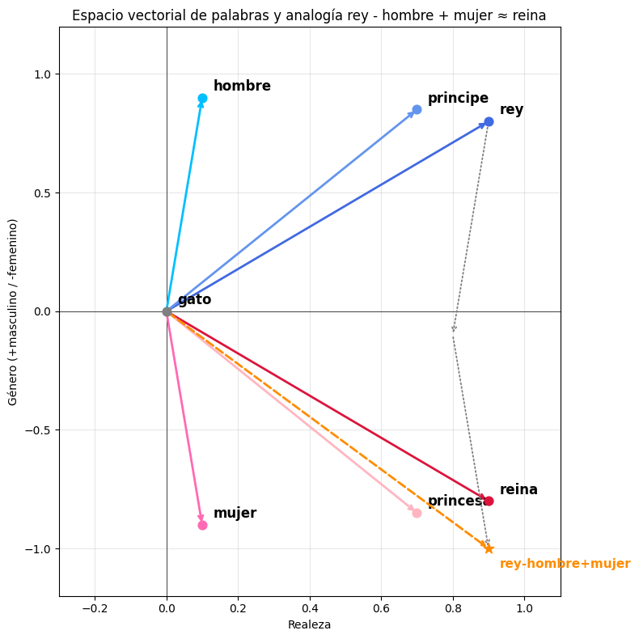
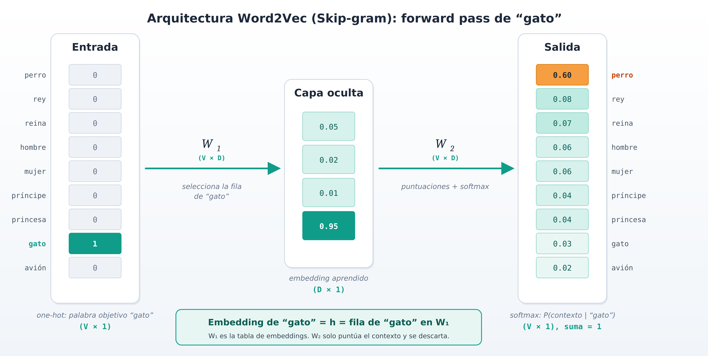
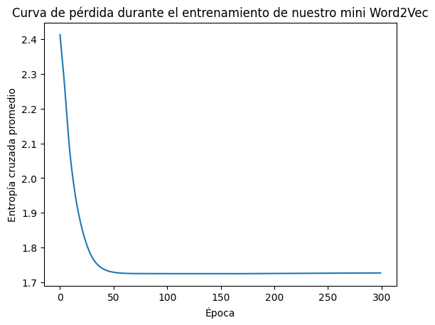
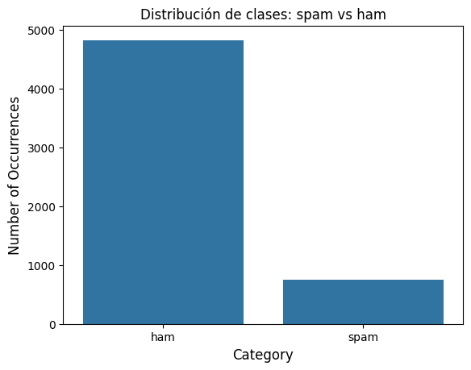
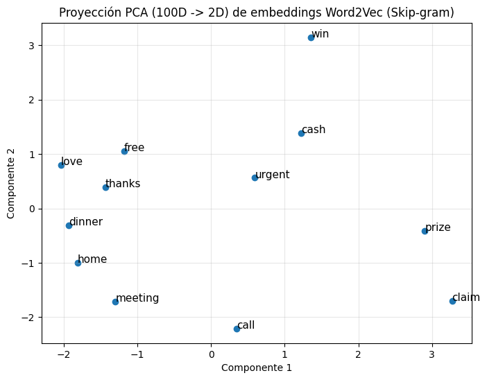
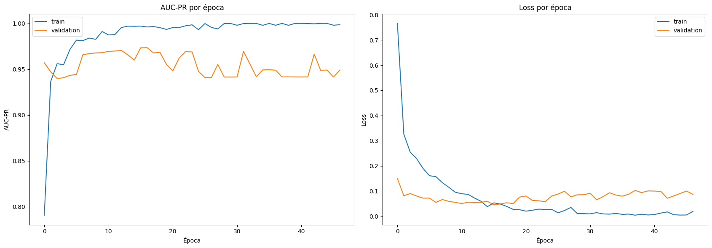
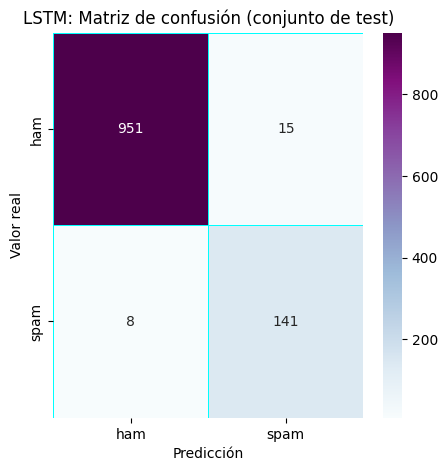

4. Recurrent Neural Networks#
Introducción
Recordemos de la sección anterior que en el corazón de las redes convolucionales se encuentra el concepto de peso compartido. Es decir, la misma matriz de filtro se desliza sobre una matriz de imágenes en lugar de dedicar un peso específico a cada píxel de la imagen. De este modo, una red neuronal puede escalarse fácilmente a imágenes de diferentes dimensiones.
Nuestro interés en esta sección se centra en el caso de los datos secuenciales. Es decir, los vectores de entrada no son independientes, sino que aparecen en secuencia. Además, el orden específico en que se producen encierra información importante. Por ejemplo, este tipo de secuencias se dan en el reconocimiento del habla y en el procesamiento del lenguaje, como la traducción automática, así como también el pronostico de series de tiempo financieras. Sin duda, la secuencia en la que se producen las palabras es de suma importancia.
El reparto de pesos mediante convoluciones también podría ser y ha sido utilizado para estos casos [Lang et al., 1990]. Tales redes se conocen como redes neuronales de retardo temporal. Sin embargo, deslizar un filtro a través del tiempo para formar convoluciones es una operación de naturaleza local. La salida es una función de las muestras de entrada dentro de una ventana temporal que abarca la longitud de la respuesta al impulso del filtro, que por razones prácticas no puede ser muy larga.
Redes Neuronales Recurrentes
Las variables que intervienen en una RNN son:
Vector de estado en el tiempo \(n\), denotado como \(\boldsymbol{h}_{n}\). El símbolo nos recuerda que \(\boldsymbol{h}\) es un vector de variables ocultas (capa oculta en la jerga de las redes neuronales); el vector de estado constituye la memoria del sistema,
Vector de entrada en el momento \(n\), denominado \(\boldsymbol{x}_{n}\),
Vector de salida en el momento \(n\), \(\hat{\boldsymbol{y}}_{n}\), y el vector de salida objetivo, \(\boldsymbol{y}_{n}\).
El modelo se describe mediante un conjunto de matrices y vectores de parámetros desconocidos, a saber, \(U, W, V , \boldsymbol{b}\) y \(\boldsymbol{c}\), que deben aprenderse durante el entrenamiento.
Las ecuaciones que describen un modelo RNN son
(4.1)#\[\begin{split} \begin{align*} \boldsymbol{h}_{n}&=f(U\boldsymbol{x}_{n}+W\boldsymbol{h}_{n-1}+\boldsymbol{b})\\ \hat{\boldsymbol{y}}_{n}&=g(V\boldsymbol{h}_{n}+\boldsymbol{c}). \end{align*} \end{split}\]donde las funciones no lineales \(f\) y \(g\)*** actúan elemento a elemento (element-wise)*** y se aplican individualmente a cada elemento de sus argumentos vectoriales.
En otras palabras, una vez que se ha observado un nuevo vector de entrada, se actualiza el vector de estado. Su nuevo valor depende de la información más reciente, transmitida por la entrada \(\boldsymbol{x}_{n}\) así como de la historia pasada, ya que ésta se ha acumulado en \(\boldsymbol{h}_{n-1}\). La salida depende del vector de estado actualizado, \(\boldsymbol{h}_{n}\). Es decir, depende de la “historia” hasta el instante actual \(n\), tal y como se expresa en \(\boldsymbol{h}_{n}\).
Las opciones típicas para \(f\) son la tangente hiperbólica, tanh, o las no linealidades ReLU. El valor inicial \(\boldsymbol{h}_{0}\) suele ser igual al vector cero. La no linealidad de salida, \(g\), se elige a menudo para ser la función softmax.

Fig. 4.1 Arquitectura de una Red Neuronal Recurrente. Fuente [Theodoridis, 2020].#
De las ecuaciones anteriores se deduce que las matrices y vectores de parámetros se comparten en todos los instantes temporales. Durante el entrenamiento, se inicializan mediante números aleatorios. El modelo gráfico asociado con Eq. (4.1) se muestra en la Fig. 4.1A. En la Fig. 4.1B, el gráfico se despliega sobre los distintos instantes de tiempo para los que se dispone de observaciones. Por ejemplo, si la secuencia de interés es una frase de 10 palabras, entonces \(N\) se establece igual a 10, mientras que \(\boldsymbol{x}_{n}\) es el vector que codifica las respectivas palabras de entrada.
4.1. Backpropagation en tiempo#
El entrenamiento de las RNN sigue una lógica similar a la del algoritmo backpropagation para el entrenamiento de redes neuronales de avance. Después de todo, una RNN puede verse como una red feed-forward con \(N\) capas. La capa superior es la del instante de tiempo \(N\) y la primera capa corresponde al instante de tiempo \(n = 1\). Una diferencia radica en que las capas ocultas en una RNN también producen salidas, es decir, \(\hat{\boldsymbol{y}}_{n}\), y se alimentan directamente con entradas. Sin embargo, en lo que respecta al entrenamiento, estas diferencias no afectan al razonamiento principal.
El aprendizaje de las matrices y vectores de parámetros desconocidos se consigue mediante un esquema de gradiente descendente, de acuerdo con Eq. (2.3). Resulta que los gradientes requeridos de la función de coste, con respecto a los parámetros desconocidos, tienen lugar recursivamente, comenzando en el último instante de tiempo, \(N\) , y retrocediendo en el tiempo, \(n = N-1, N-2,\dots,1\). Esta es la razón por la que el algoritmo se conoce como bakpropagation a traves del tiempo (BPTT).
La función de coste es la suma a lo largo del tiempo, \(n\), de las correspondientes contribuciones a la función de pérdida, que dependen de los valores respectivos de \(\boldsymbol{h}_{n}, \boldsymbol{x}_{n}\), es decir,
Por ejemplo, para el caso de la función de pérdida de entropía cruzada,
\[ J_{n}(U, W, V, \boldsymbol{b}, \boldsymbol{c}):=-\sum_{k}y_{nk}\ln\hat{y}_{nk}, \]donde la suma es sobre la dimensionalidad de \(\boldsymbol{y}\), y
\[ \hat{\boldsymbol{y}}_{n}=g(\boldsymbol{h}_{n}, V, \boldsymbol{c})~\text{y}~\boldsymbol{h}_{n}=f(\boldsymbol{x}_{n}, \boldsymbol{h}_{n-1}, U, W, \boldsymbol{b}). \]
En el corazón del cálculo de los gradientes de la función de coste con respecto a las diversas matrices y vectores de parámetros se encuentra el cálculo de los gradientes de \(J\) con respecto a los vectores de estado, \(\boldsymbol{h}_{n}\). Una vez calculados estos últimos, el resto de los gradientes, con respecto a las matrices y vectores de parámetros desconocidos, es una tarea sencilla. Para ello, nótese que cada \(h_{n},~n=1, 2,\dots,N-1\), afecta a \(J\) de dos maneras:
Directamente, a traves de \(J_{n}\)
Indirectamente, a través de la cadena que impone la estructura RNN, es decir,
\[ \boldsymbol{h}_{n}\rightarrow\boldsymbol{h}_{n+1}\rightarrow\cdots\rightarrow\boldsymbol{h}_{N}. \]Es decir, \(\boldsymbol{h}_{n}\), además de \(J_{n}\), también afecta a todos los valores de coste posteriores, \(J_{n+1},\dots, J_{N}\). Nótese que, a traves de la cadena \(\boldsymbol{h}_{n+1}=f(\boldsymbol{x}_{n+1}, \boldsymbol{h}_{n}, U, W, \boldsymbol{b}).\)
Empleando la regla de la cadena para las derivadas, las dependencias anteriores conducen al siguiente cálculo recursivo:
(4.2)#\[ \frac{\partial J}{\partial\boldsymbol{h}_{n}}=\underbrace{{\left(\frac{\partial\boldsymbol{h}_{n+1}}{\partial\boldsymbol{h}_{n}}\right)^{T}}\frac{\partial J}{\partial\boldsymbol{h}_{n+1}}}_{\text{parte recursiva indirecta}}+\underbrace{\left(\frac{\partial\hat{\boldsymbol{y}}_{n}}{\partial\boldsymbol{h}_{n}}\right)^{T}\frac{\partial J}{\partial\hat{\boldsymbol{y}}_{n}}}_{\text{parte directa}}, \]donde, por definición, la derivada de un vector, digamos, \(\boldsymbol{y}\), con respecto a otro vector, digamos, \(\boldsymbol{x}\), se define como la matriz
\[ \left[\frac{\partial\boldsymbol{y}}{\partial\boldsymbol{x}}\right]_{ij}:=\frac{\partial y_{i}}{\partial x_{j}}. \]
Nótese que el gradiente de la función de coste, con respecto a los parámetros ocultos (vector de estado) en la capa “\(n\)”, se da como una función del gradiente respectivo en la capa anterior, es decir, con respecto al vector de estado en el tiempo \(n + 1\). Las dos pasadas requeridas por backpropagation en el tiempo se resumen a continuación.
Pasadas de Backpropagation en Tiempo
Paso hacia adelante:
Iniciando en \(n=1\) y utilizando las estimaciones actuales de las matrices y vectores de parámetros implicados, calcular en secuencia,
\[ (\boldsymbol{h}_{1}, \hat{\boldsymbol{y}}_{1})\rightarrow(\boldsymbol{h}_{2}, \hat{\boldsymbol{y}}_{2})\rightarrow\cdots\rightarrow(\boldsymbol{h}_{N}, \hat{\boldsymbol{y}}_{N}). \]Paso hacia atrás:
Empezando en \(n = N\), calcular en secuencia,
\[ \frac{\partial J}{\partial\boldsymbol{h}_{N}}\rightarrow\frac{\partial J}{\partial\boldsymbol{h}_{N-1}}\rightarrow\cdots\rightarrow\frac{\partial J}{\partial\boldsymbol{h}_{1}}. \]
Nótese que el cálculo del gradiente \(\partial J/\partial\boldsymbol{h}_{N}\) es sencillo, y solo involucra la parte directa en Eq. (4.2).
Para la implementación de la BPTT, se procede a
inicializar aleatoriamente las matrices y vectores desconocidos implicados,
calcular todos los gradientes requeridos, siguiendo los pasos indicados anteriormente, y
realizar las actualizaciones según el esquema de gradiente descendente.
Los pasos (2) y (3) se realizan de forma iterativa hasta que se cumple un criterio de convergencia, de forma análoga al algoritmo estándar de backpropagation.
4.2. Desvanecimiento y explosión de gradientes#
La tarea de desvanecimiento y explosión de gradientes se ha introducido y discutido en secciones anteriores, en el contexto del algoritmo de backpropagation. Los mismos problemas se presentan en el algoritmo BPTT, dado que, este último es una forma específica del concepto de backpropagation y, como se ha dicho, una RNN puede considerarse como una red multicapa, donde cada instante de tiempo corresponde a una capa diferente. De hecho en las RNN, el fenómeno de desvanecimiento/explosión de gradiente aparece de una forma bastante “agresiva”, teniendo en cuenta que \(N\) puede alcanzar valores grandes.
La naturaleza multiplicativa de la propagación de gradientes puede verse fácilmente en la Eq. (4.2). Para ayudar a comprender el concepto principal, simplifiquemos el escenario y supongamos que sólo interviene una variante de estado. Entonces los vectores de estado se convierten en escalares, \(h_{n}\) , y la matriz \(W\) en un escalar \(w\). Además, supongamos que las salidas también son escalares. Entonces la recursión en la Eq. (4.2) se simplifica como:
Suponiendo en la Eq. (4.1) que \(f\) es la función \(\tanh(\cdot)\) estándar, teniendo en cuenta que, \(\text{sech}^2(\cdot)=1-\tanh^2(\cdot)\) y \(|\tanh(\cdot)|<1\), sobre su dominio, se ve fácilmente que
Escribiendo la recursión para dos pasos sucesivos, repitiendo el proceso en Eq. (4.3), por ejemplo, para \(\partial h_{n+2}/\partial h_{n+1}\) obtenemos que,
No es difícil ver que la multiplicación de los términos menores que uno puede llevar a valores de desvanecimiento, sobre todo si tenemos en cuenta que, en la práctica, las secuencias pueden ser bastante grandes, por ejemplo, \(N = 100\). Por lo tanto para instantes de tiempo cercanos a \(n = 1\), la contribución al gradiente del primer término del lado derecho en la Eq. (4.4) implicará un gran número de productos de números menores que uno en magnitud. Por otra parte, el valor de \(w\) estará contribuyendo en \(w^{n}\) potencia. Por lo tanto, si su valor es mayor que uno, puede conducir a valores explosivos de los gradientes respectivos.
En varios casos, se puede truncar el algoritmo de backpropagation a unos pocos pasos de tiempo. Otra forma, es sustituir la no linealidad tanh por la ReLU. Para el caso del valor explosivo, se puede introducir una técnica que recorte los valores a un umbral predeterminado, una vez que los valores superen ese umbral. Sin embargo, otra técnica que suele emplearse en la práctica es sustituir la formulación RNN estándar descrita anteriormente por una estructura alternativa, que puede hacer mejor frente a estos fenómenos causados por la dependencia a largo plazo de la RNN.
Observation 4.1
RNN profundas: Además de la red RNN básica que comprende una sola capa de estados, se han propuesto extensiones que implican múltiples capas de estados, una encima de otra (ver [Pascanu et al., 2013]).RNN bidireccionales: Como su nombre indica, en las RNN bidireccionales hay dos variables de estado, es decir, una denotada como \(\overset{\rightarrow}{\boldsymbol{h}}\), que se propaga hacia adelante, y otra, \(\overset{\leftarrow}{\boldsymbol{h}}\), que se propaga hacia atrás. De este modo, las salidas dependen tanto del pasado como del futuro (ver [Graves et al., 2013]).
Ejemplo
Ejemplo de BPTT con dos secuencias de texto. Este ejemplo utiliza dos secuencias de texto (una positiva y una negativa) para demostrar cómo funciona el proceso de Backpropagation Through Time (BPTT) en una red recurrente. Además, mostramos la actualización de los pesos mediante gradiente descendente.
Paso 1: Definición de los datos y parámetros
Secuencias de Texto
Secuencia 1 (Positiva):
"I love this movie"Secuencia 2 (Negativa):
"This movie is terrible"
Embeddings de las Palabras
Cada palabra se representa por un vector embedding (
Word2Vec) de 3 dimensiones:"I"= \([0.1, 0.2, 0.1]\)"love"= \([0.4, 0.5, 0.6]\)"this"= \([0.3, 0.1, 0.3]\)"movie"= \([0.5, 0.1, -0.3]\)"is"= \([0.2, 0.3, 0.2]\)"terrible"= \([-0.5, -0.6, -0.7]\)
Etiquetas de Salida (Clases)
Secuencia 1: clase 1 (positiva)
Secuencia 2: clase 0 (negativa)
Definir los Datos y Parámetros Iniciales (tres filas en las matrices significa que hay tres unidades en la capa oculta)
Sesgos
Paso 2: Propagación hacia Adelante
Vamos a recalcular las salidas de los estados ocultos \(h_n\) y la salida final \(y_n\), incluyendo la función de activación en la salida (
softmax).Tiempo \(n = 1\) (
"I")Para la palabra
"I", \(x_1 = [0.1, 0.2, 0.1]\):
Calcular la propagación hacia adelante del estado oculto \(h_1\):
\[\begin{split} U \cdot x_1 = U \cdot [0.1, 0.2, 0.1]^\top = \begin{bmatrix} (0.1 \times 0.1) + (-0.2 \times 0.2) + (0.3 \times 0.1) \\ (0.4 \times 0.1) + (0.1 \times 0.2) + (-0.3 \times 0.1) \\ (0.3 \times 0.1) + (0.2 \times 0.2) + (-0.1 \times 0.1) \end{bmatrix} = \begin{bmatrix} 0.01 + (-0.04) + 0.03 \\ 0.04 + 0.02 + (-0.03) \\ 0.03 + 0.04 + (-0.01) \end{bmatrix} = \begin{bmatrix} 0.02 \\ 0.05 \\ 0.07 \end{bmatrix} \end{split}\]Como \(h_0 = [0, 0, 0]\):
\[ h_1 = \tanh([0.02, 0.05, 0.07] + b) = \tanh([0.12, 0.15, 0.17]) \approx [0.119, 0.149, 0.168] \]Tiempo \(n = 2\) (
"love")Para la palabra
"love", \(x_2 = [0.4, 0.5, 0.6]\):
Calcular la propagación hacia adelante del estado oculto \(h_2\):
\[\begin{split} U \cdot x_2 = \begin{bmatrix} 0.22 \\ 0.13 \\ 0.15 \end{bmatrix} \end{split}\]Calcular el estado recurrente con \(W \cdot h_1\):
\[\begin{split} W \cdot h_1 = \begin{bmatrix} 0.065 \\ 0.096 \\ 0.074 \end{bmatrix} \end{split}\]Propagación total del estado oculto \(h_2\):
\[\begin{split} \begin{align*} h_2 &= \tanh([0.22, 0.13, 0.15] + [0.065, 0.096, 0.074] + b)\\ &= \tanh([0.385, 0.376, 0.394])\\ &\approx [0.367, 0.359, 0.374] \end{align*} \end{split}\]
Paso 3: Cálculo de la Salida con Activación Softmax
La salida se calcula utilizando la matriz \(V\), aplicando después la función de activación
softmaxpara obtener las probabilidades de las dos clases.
Calculamos la salida \(\hat{y}_{2}\) antes de la activación:
\[\begin{split} \hat{y}_{2} = V \cdot h_2 = \begin{bmatrix} 0.2 & -0.3 \\ 0.4 & 0.1 \\ -0.2 & 0.3 \end{bmatrix} \cdot [0.367, 0.359, 0.374]^\top = \begin{bmatrix} 0.0516 \\ 0.1108 \end{bmatrix} \end{split}\]Aplicamos la función de activación
softmaxpara convertir la salida en probabilidades:\[\begin{split} \text{softmax}(\hat{y}_{2}) = \frac{e^{\hat{y}_{2}}}{\sum e^{\hat{y}_{2}}} = \frac{\begin{bmatrix} e^{0.0516} \\ e^{0.1108} \end{bmatrix}}{e^{0.0516} + e^{0.1108}} = \begin{bmatrix} 0.4852 \\ 0.5148 \end{bmatrix} \end{split}\]
Paso 4: Retropropagación del Error
Ahora calculamos el error y el gradiente con respecto a los pesos \(V\), \(W\), \(U\), y los sesgos, usando el método de cross-entropy y BPTT
Cálculo del Error
La pérdida es:
\[ \text{Loss} = - \left[ y_{\text{real}} \cdot \log(\hat{y}) + (1 - y_{\text{real}}) \cdot \log(1 - \hat{y}) \right] \]“Nota: aquí, 0.5148 es la probabilidad asignada a la clase considerada correcta (la etiqueta real), y 0.4852 es la probabilidad para la clase incorrecta”. Si la clase verdadera es 1 (positiva) el error es:
\[ \text{Loss} = - \log(0.5148) \approx 0.663 \]
Gradientes
La siguiente es la derivada de la entropía cruzada con softmax
\[ \frac{\partial L}{\partial \tilde{y}_k} = \hat{y}_k - y_k \]es válido incluso si \(y\) es una distribución (ej. label smoothing).
Dado que,
Logits: \(\tilde{y}_k\), salidas crudas (no normalizadas) de la última capa lineal antes de aplicar la función softmax
Softmax:
\[ \hat{y}_k = \frac{e^{\tilde{y}_k}}{\sum_j e^{\tilde{y}_j}} \]Entropía cruzada:
\[ L = -\sum_i y_i \log(\hat{y}_i) \]Gradiente paso a paso
Separando casos
Sumando todo
\[ \frac{\partial L}{\partial \tilde{y}_k} = -y_k + y_k \hat{y}_k + \hat{y}_k \sum_{i \neq k} y_i \]y usando que:
\[ \sum_{i \neq k} y_i = \Big(\sum_i y_i \Big) - y_k \]Si \(y\) es un vector one-hot:
\[ \sum_i y_i = 1, \]entonces:
\[\begin{split} \begin{align} \frac{\partial L}{\partial \tilde{y}_k} &= -y_k + y_k \hat{y}_k + \hat{y}_k (1 - y_k) \\[6pt] &= \hat{y}_k - y_k \end{align} \end{split}\]
Gradiente para \(V\):
\[ \frac{\partial L}{\partial V} = (y_{\text{pred}} - y_{\text{real}}) \cdot h_2 \]\[\begin{split} \frac{\partial L}{\partial V} = \left( \begin{bmatrix} 0.4852 \\ 0.5148 \end{bmatrix} - \begin{bmatrix} 0 \\ 1 \end{bmatrix} \right) \cdot \begin{bmatrix} 0.367 \\ 0.359 \\ 0.374 \end{bmatrix}^\top \end{split}\]\[\begin{split} \frac{\partial L}{\partial V} = \begin{bmatrix} 0.4852 & 0.4852 \\ -0.4852 & -0.4852 \\ 0.5148 & -0.5148 \end{bmatrix} \end{split}\]Gradiente para \(W\) y \(U\): Usamos la retropropagación a través del tiempo (BPTT). Los gradientes para \(W\) y \(U\) se calculan usando la regla de la cadena considerando las derivadas del estado oculto.
Paso 5: Actualización de Pesos
Usamos gradiente descendente para actualizar los pesos. Dado un valor de \(\eta = 0.01\):
\[ V \leftarrow V - \eta \frac{\partial L}{\partial V} \]\[ W \leftarrow W - \eta \frac{\partial L}{\partial W}, \quad U \leftarrow U - \eta \frac{\partial L}{\partial U} \]Actualización de los pesos para \(V\):
Tarea: Realice las actualizaciones análogas para \(W\) y \(U\), con al menos tres iteraciones en las que se note el decrecimiento del error.
4.3. Red de memoria a largo plazo (LSTM)#
Observation 4.2
La idea clave de la red LSTM, propuesta en el artículo seminal [Hochreiter and Schmidhuber, 1997], es el llamado celda de estado (cell state), que ayuda a superar los problemas asociados con los fenómenos de desvanecimiento/explosión que son causados por las dependencias largo plazo dentro de la red.
Las redes LSTM tienen la capacidad incorporada de controlar el flujo de información que entra y sale de la memoria del sistema mediante algoritmos no lineales. Estas puertas se implementan mediante la no linealidad sigmoidea y un multiplicador.
Desde un punto de vista algorítmico, las puertas equivalen a aplicar una ponderación al flujo de información correspondiente. Los pesos se sitúan en el intervalo \([0,1]\) y dependen de los valores de las variables implicadas que activan la no linealidad sigmoidea.
En otras palabras, la ponderación (control) de la información tiene lugar en el contexto. Según este razonamiento, la red tiene la agilidad de olvidar la información que ya ha sido utilizada y ya no es necesaria. La célula/unidad LSTM básica se se muestra en la Fig. 4.2.
Se construye en torno a dos conjuntos de variables, apiladas en el vector \(\boldsymbol{s}\), que se conoce como el celda de estado, y el vector \(\boldsymbol{h}\), que se conoce como el vector de variables ocultas. Una red LSTM se construye a partir de la concatenación sucesiva de esta unidad básica. La unidad correspondiente al tiempo \(n\), además del vector de entrada, \(\boldsymbol{x}_{n}\), recibe \(\boldsymbol{s}_{n-1}\) y \(\boldsymbol{h}_{n-1}\) de la etapa anterior y pasa \(\boldsymbol{s}_{n}\) y \(\boldsymbol{h}_{n}\) a la siguiente. A continuación se resumen las ecuaciones de actualización asociadas

Fig. 4.2 Arquitectura de unidad LSTM. Fuente [Theodoridis, 2020].#
donde \(\circ\) denota el producto elemento a elemento entre vectores o matrices (producto de Hadamard), es decir, \((s\circ f)_{i} = s_{i}f_{i}\), y \(\sigma\) denota la función sigmoidea logística.
Puerta de olvido(\(\boldsymbol{f}\))Esta puerta decide qué información se debe olvidar de la celda. Se calcula de la siguiente manera:
\[ \boldsymbol{f} = \sigma(U^{f} \boldsymbol{x}_{n} + W^{f} \boldsymbol{h}_{n-1} + \boldsymbol{b}^{f}) \]\( U^{f} \): pesos de la puerta de olvido aplicados a la entrada actual \( \boldsymbol{x}_{n} \).
\( W^{f} \): pesos de la puerta de olvido aplicados al estado oculto anterior \( \boldsymbol{h}_{n-1} \).
\( \boldsymbol{b}^{f} \): sesgo de la puerta de olvido.
\( \sigma \): función sigmoide.
Puerta de entrada(\(\boldsymbol{i}\))Esta puerta decide qué nueva información se almacenará en la celda:
\[ \boldsymbol{i} = \sigma(U^{i} \boldsymbol{x}_{n} + W^{i} \boldsymbol{h}_{n-1} + \boldsymbol{b}^{i}) \]\( U^{i} \): pesos de la puerta de entrada aplicados a la entrada actual \( \boldsymbol{x}_{n} \).
\( W^{i} \): pesos de la puerta de entrada aplicados al estado oculto anterior \( \boldsymbol{h}_{n-1} \).
\( \boldsymbol{b}^{i} \): sesgo de la puerta de entrada.
Candidato de estado(\( \tilde{\boldsymbol{s}} \))Genera nuevas candidaturas para el estado de la celda:
\[ \tilde{\boldsymbol{s}} = \tanh(U^{s} \boldsymbol{x}_{n} + W^{s} \boldsymbol{h}_{n-1} + \boldsymbol{b}^{s}) \]\( U^{s} \): pesos del candidato de estado aplicados a la entrada actual \( \boldsymbol{x}_{n} \).
\( W^{s} \): pesos del candidato de estado aplicados al estado oculto anterior \( \boldsymbol{h}_{n-1} \).
\( \boldsymbol{b}^{s} \): sesgo del candidato de estado.
\( \tanh \): función tangente hiperbólica.
Estado de la celda(\( \boldsymbol{s}_{n} \))Actualiza el estado de la celda utilizando la puerta de olvido y la puerta de entrada:
\[ \boldsymbol{s}_{n} = \boldsymbol{s}_{n-1} \circ \boldsymbol{f} + \boldsymbol{i} \circ \tilde{\boldsymbol{s}} \]\( \circ \): multiplicación elemento a elemento.
\( \boldsymbol{s}_{n-1} \): estado de la celda en el paso temporal anterior.
Puerta de salida(\( \boldsymbol{o} \))Decide qué parte del estado de la celda se enviará a la salida:
\[ \boldsymbol{o} = \sigma(U^{o} \boldsymbol{x}_{n} + W^{o} \boldsymbol{h}_{n-1} + \boldsymbol{b}^{o}) \]\( U^{o} \): pesos de la puerta de salida aplicados a la entrada actual \( \boldsymbol{x}_{n} \).
\( W^{o} \): pesos de la puerta de salida aplicados al estado oculto anterior \( \boldsymbol{h}_{n-1} \).
\( \boldsymbol{b}^{o} \): sesgo de la puerta de salida.
Estado oculto(\(\boldsymbol{h}_{n}\))Finalmente, se calcula el estado oculto, que es la salida de la celda LSTM:
\[ \boldsymbol{h}_{n} = \boldsymbol{o} \circ \tanh(\boldsymbol{s}_{n}) \]Resumen de salida de una redLSTMEstado de la Celda (\( \boldsymbol{s}_{n} \)): almacena información a largo plazo, afectada por las puertas de olvido y entrada.
Estado Oculto (\( \boldsymbol{h}_{n} \)): representa la salida de la celda LSTM en el tiempo \( n \), que se utiliza como entrada para el siguiente paso temporal y puede usarse como salida de la red.
Cómo se transfiere la información dentro de la celda, paso a paso
Paso 1, olvidar: la compuerta \(f_t\) se multiplica elemento a elemento con la memoria vieja, \(f_t \odot c_{t-1}\). Si un componente de \(f_t\) es cercano a 0, ese dato de la memoria se borra; si es cercano a 1, se conserva. Aquí es donde actúa el pasado de largo plazo.
Paso 2, escribir: el candidato \(\tilde{c}_t\) propone información nueva, construida con el presente \(x_t\) y con \(h_{t-1}\). La compuerta \(i_t\) decide cuánto de ese candidato se guarda: \(i_t \odot \tilde{c}_t\).
Paso 3, actualizar la memoria: se suman ambos resultados,
\[ c_t = f_t \odot c_{t-1} + i_t \odot \tilde{c}_t \]Esta suma es el “camino directo” del pasado al futuro que menciona la Observación 4.3. La memoria vieja pasa casi intacta, salvo por la multiplicación por \(f_t\), y no atraviesa una no linealidad en cada paso. Por eso la LSTM recuerda mejor a largo plazo que una RNN básica.
Paso 4, leer: la compuerta \(o_t\) decide qué parte de la memoria se expone hacia afuera:
\[ h_t = o_t \odot \tanh(c_t) \]Este \(h_t\) es la salida de la celda en el tiempo \(t\). Es el nuevo “pasado de corto plazo” que llegará a las compuertas del paso siguiente.
Ejemplo: una celda con dos componentes
Escenario: la celda guarda dos datos sobre un texto que está leyendo. El componente 1 representa el tema general (información de largo plazo, conviene conservarla). El componente 2 representa un detalle de la frase anterior (información que ya no sirve y debe reemplazarse).
Datos de partida (las compuertas ya fueron calculadas por la red a partir de \(x_t\) y \(h_{t-1}\); aquí se dan directamente para concentrarse en el flujo):
Variable
Componente 1 (tema)
Componente 2 (detalle)
Memoria vieja \(c_{t-1}\)
\(2.0\)
\(-1.0\)
Compuerta de olvido \(f_t\)
\(0.9\)
\(0.1\)
Compuerta de entrada \(i_t\)
\(0.2\)
\(0.8\)
Candidato \(\tilde{c}_t\)
\(0.5\)
\(1.0\)
Compuerta de salida \(o_t\)
\(0.9\)
\(0.2\)
Paso 1, olvidar:
\[ f_t \odot c_{t-1} = [0.9 \cdot 2.0,\; 0.1 \cdot (-1.0)] = [1.8,\; -0.1] \]El tema se conserva casi completo (\(2.0 \to 1.8\)). El detalle viejo casi desaparece (\(-1.0 \to -0.1\)).
Paso 2, escribir:
\[ i_t \odot \tilde{c}_t = [0.2 \cdot 0.5,\; 0.8 \cdot 1.0] = [0.1,\; 0.8] \]Al tema casi no se le añade nada nuevo. En cambio, el espacio liberado del detalle se llena con información nueva.
Paso 3, actualizar la memoria:
\[ c_t = [1.8 + 0.1,\; -0.1 + 0.8] = [1.9,\; 0.7] \]Paso 4, leer:
\[ \tanh(c_t) \approx [0.956,\; 0.604], \qquad h_t = [0.9 \cdot 0.956,\; 0.2 \cdot 0.604] \approx [0.861,\; 0.121] \]La celda expone casi todo el tema, pero casi oculta el detalle nuevo, aunque lo guardó en \(c_t\). Este \(h_t\) viaja al paso \(t+1\).
Verificación numérica en Python
El siguiente código reproduce el ejemplo, con comentarios línea a línea:
import numpy as np # Importamos NumPy para trabajar con vectores
c_prev = np.array([2.0, -1.0]) # Memoria vieja c_{t-1}: [tema, detalle]
f_t = np.array([0.9, 0.1]) # Compuerta de olvido: cuánto de la memoria vieja se conserva
i_t = np.array([0.2, 0.8]) # Compuerta de entrada: cuánto del candidato se escribe
c_tilde = np.array([0.5, 1.0]) # Candidato: información nueva propuesta
o_t = np.array([0.9, 0.2]) # Compuerta de salida: cuánto de la memoria se expone
olvidado = f_t * c_prev # Paso 1: producto elemento a elemento, filtra la memoria vieja
escrito = i_t * c_tilde # Paso 2: filtra el candidato con la compuerta de entrada
c_t = olvidado + escrito # Paso 3: nueva memoria = memoria filtrada + información nueva
h_t = o_t * np.tanh(c_t) # Paso 4: salida = compuerta de salida por tanh de la memoria
print("Paso 1 (olvidado):", olvidado) # Muestra [ 1.8 -0.1]
print("Paso 2 (escrito): ", escrito) # Muestra [0.1 0.8]
print("Paso 3 (c_t): ", c_t) # Muestra [1.9 0.7]
print("Paso 4 (h_t): ", h_t.round(3)) # Muestra [0.861 0.121]
Note
Cambiar \(f_t\) a \([0.1, 0.1]\) y recalculen \(c_t\). Verán que el tema se pierde por completo, lo que ilustra por qué la compuerta de olvido es la clave de la memoria a largo plazo.
Observation 4.3
La celda de estado \(\boldsymbol{s}\) transmite información directa del instante anterior al siguiente. La puerta de olvido \(\boldsymbol{f}\), con valores en \([0, 1]\), la pondera según la entrada actual y las variables ocultas previas (la ponderación se ajusta en “contexto”). Luego se añade la nueva información \(\tilde{\boldsymbol{s}}\), controlada por la puerta de entrada \(\boldsymbol{i}\). Así el pasado llega al futuro de forma directa, lo que ayuda a la red a memorizar.
Esta memoria explota mejor las dependencias de largo alcance que una RNN básica. El vector oculto \(\boldsymbol{h}\) depende de la celda de estado, de la entrada actual y de los estados anteriores, y todas las matrices y vectores se aprenden en el entrenamiento. \(\boldsymbol{h}_{n}\) tiene dos salidas: hacia la siguiente etapa y hacia la predicción \(\hat{\boldsymbol{y}}_{n}\) (por ejemplo, vía softmax, como en Eq. (4.1)).
Variantes y Aplicaciones
Además de la estructura LSTM ya comentada, se han propuesto diversas variantes. Un extenso estudio comparativo entre diferentes arquitecturas LSTM y RNN se puede encontrar en [Greff et al., 2016, Jozefowicz et al., 2015]. Las RNNs y las LSTMs se han utilizado con éxito en una amplia gama de aplicaciones, tales como:
el modelado del lenguaje [Sutskever et al., 2011],
traducción de máquinas [Liu et al., 2014],
reconocimiento del habla [Graves and Jaitly, 2014],
visión artificial para la generación de descriptores de imágenes [Karpathy and Fei-Fei, 2015],
análisis de datos de fMRI para comprender la dinámica temporal de las redes cerebrales asociadas [Seo et al., 2019].
pronostico de volatilidad de Bitcoin [Pratas et al., 2023]
Por ejemplo, en el procesamiento del lenguaje la entrada suele ser una secuencia de palabras, que se codifican como números (son punteros al diccionario disponible). La salida es la secuencia de palabras que hay que predecir. Durante el entrenamiento, se establece \(\boldsymbol{y}_{n} = \boldsymbol{x}_{n+1}\). Es decir, la red se entrena como un predictor no lineal.
4.4. Aplicación: Procesamiento del Lenguaje Natural#
En esta sección construimos, desde los fundamentos, un clasificador de mensajes spam vs ham (no-spam) usando:
Word2Vec: para entender matemáticamente y con ejemplos numéricos de dónde salen los embeddings de palabras (no solo usarlos como caja negra).
Doc2Vec: como extensión de Word2Vec para representar documentos completos.
LSTM: una red recurrente que consume esos embeddings para clasificar texto.
import warnings
warnings.filterwarnings('ignore')
import sys
import tensorflow.keras
import pandas as pd
import sklearn as sk
import tensorflow as tf
tf.keras.utils.set_random_seed(42) # fija Python, NumPy y TensorFlow a la vez
tf.config.experimental.enable_op_determinism() # fuerza operaciones deterministas en GPU
import tensorflow as tf
from tensorflow.python.platform import build_info as tf_build_info
print(f"Tensor Flow Version: {tf.__version__}")
print()
print(f"Python {sys.version}")
print(f"Pandas {pd.__version__}")
print(f"Scikit-Learn {sk.__version__}")
gpu = len(tf.config.list_physical_devices('GPU')) > 0
print("GPU is", "available" if gpu else "NOT AVAILABLE")
print()
print("=== Detalle de dispositivos físicos ===")
for device in tf.config.list_physical_devices('GPU'):
print(device)
details = tf.config.experimental.get_device_details(device)
print(details)
print()
print("=== Versiones de CUDA/cuDNN con las que se compiló TensorFlow ===")
print(f"CUDA build version: {tf_build_info.build_info.get('cuda_version', 'N/A')}")
print(f"cuDNN build version: {tf_build_info.build_info.get('cudnn_version', 'N/A')}")
Tensor Flow Version: 2.21.0
Python 3.12.14 | packaged by Anaconda, Inc. | (main, Aug 27 2026, 14:46:43) [GCC 14.3.0]
Pandas 2.3.1
Scikit-Learn 1.7.0
GPU is available
=== Detalle de dispositivos físicos ===
PhysicalDevice(name='/physical_device:GPU:0', device_type='GPU')
{'compute_capability': (8, 9), 'device_name': 'NVIDIA GeForce RTX 4070'}
=== Versiones de CUDA/cuDNN con las que se compiló TensorFlow ===
CUDA build version: 12.5.1
cuDNN build version: 9
Iniciamos verificando que TensorFlow está correctamente instalado y puede utilizar la GPU disponible.
La librería gensim utilizada en esta implementación debe instalarse con:
pip install gensim
Usamos gensim 4.x (no 3.8.3). La API de Doc2Vec/Word2Vec es prácticamente igual, salvo que en la versión 4 ya no existe el parámetro
size(se llamavector_size) y el atributowv.vocabfue reemplazado porwv.key_to_index.
4.4.1. Word2Vec: ¿de dónde salen realmente los embeddings?#
Antes de usar Word2Vec como una “caja negra” de gensim, vale la pena entender qué problema resuelve y de dónde salen los números que forman un embedding.
4.4.2. La idea central#
“Conocerás una palabra por la compañía que mantiene”: J.R. Firth (1957)
Word2Vec parte de la hipótesis distribucional: palabras que aparecen en contextos similares tienden a tener significados similares. En vez de representar palabras como categorías discretas (one-hot encoding, donde “gato” y “perro” son igual de distintos que “gato” y “avión”), Word2Vec les asigna un vector denso de números reales (por ejemplo, 100 o 300 dimensiones) de forma que:
Palabras que aparecen en contextos parecidos \(\rightarrow\) vectores cercanos (similitud coseno alta).
Las relaciones semánticas quedan codificadas como direcciones en el espacio vectorial. El ejemplo clásico:
Ejemplo ilustrativo con 4 dimensiones interpretables:
[realeza, género, riqueza, animalidad].
import numpy as np
np.set_printoptions(precision=2, suppress=True)
# [realeza, género(+masc/-fem), riqueza, animalidad]
vectores = {
"rey": np.array([0.9, 0.8, 0.7, 0.0]),
"reina": np.array([0.9, -0.8, 0.7, 0.0]),
"hombre": np.array([0.1, 0.9, 0.1, 0.0]),
"mujer": np.array([0.1, -0.9, 0.1, 0.0]),
"principe": np.array([0.7, 0.85,0.5, 0.0]),
"princesa": np.array([0.7, -0.85,0.5, 0.0]),
"gato": np.array([0.0, 0.0, 0.0, 0.9]),
"avion": np.array([-0.9, 0.0,-0.9,-0.9]),
}
for p, v in vectores.items():
print(f"{p:10s} -> {v}")
rey -> [0.9 0.8 0.7 0. ]
reina -> [ 0.9 -0.8 0.7 0. ]
hombre -> [0.1 0.9 0.1 0. ]
mujer -> [ 0.1 -0.9 0.1 0. ]
principe -> [0.7 0.85 0.5 0. ]
princesa -> [ 0.7 -0.85 0.5 0. ]
gato -> [0. 0. 0. 0.9]
avion -> [-0.9 0. -0.9 -0.9]
4.4.3. Similitud coseno (álgebra lineal)#
Mide el ángulo entre dos vectores, no su magnitud:
Ángulo pequeño \(\rightarrow\) coseno cercano a 1 → palabras semánticamente parecidas.
def cos_sim(a, b):
return np.dot(a, b) / (np.linalg.norm(a) * np.linalg.norm(b))
pares = [("rey","principe"), ("rey","reina"), ("gato","avion")]
for a, b in pares:
print(f"cos({a}, {b}) = {cos_sim(vectores[a], vectores[b]):.2f}")
cos(rey, principe) = 0.99
cos(rey, reina) = 0.34
cos(gato, avion) = -0.58
4.4.4. La analogía vectorial: resta + suma#
rey − hombre cancela el componente “masculino” y deja aislada la dirección de realeza.
+ mujer inyecta la dirección “femenina”.
El resultado aterriza casi exactamente sobre reina.
resultado = vectores["rey"] - vectores["hombre"] + vectores["mujer"]
print("Resultado:", resultado)
print("Reina :", vectores["reina"])
print()
for p, v in vectores.items():
if p not in ("rey","hombre","mujer"):
print(f"cos(resultado, {p:10s}) = {cos_sim(resultado, v):.4f}")
Resultado: [ 0.9 -1. 0.7 0. ]
Reina : [ 0.9 -0.8 0.7 0. ]
cos(resultado, reina ) = 0.9942
cos(resultado, principe ) = 0.0709
cos(resultado, princesa ) = 0.9978
cos(resultado, gato ) = 0.0000
cos(resultado, avion ) = -0.6091
4.4.5. Visualización de los vectores#
Proyectamos en el plano Realeza (eje X) vs Género (eje Y): las 2 dimensiones más ilustrativas.
Las flechas punteadas grises muestran el camino de la analogía: partiendo de rey, restamos hombre (☆ punto intermedio) y sumamos mujer, aterrizando casi exactamente sobre reina (estrella naranja).
import matplotlib.pyplot as plt
fig, ax = plt.subplots(figsize=(8, 8))
coords = {p: v[:2] for p, v in vectores.items() if p != "avion"}
colores = {
"rey": "royalblue", "reina": "crimson", "hombre": "deepskyblue",
"mujer": "hotpink", "principe": "cornflowerblue", "princesa": "lightpink",
"gato": "gray"
}
for p, (x, y) in coords.items():
ax.annotate("", xy=(x, y), xytext=(0, 0),
arrowprops=dict(arrowstyle="->", color=colores.get(p, "black"), lw=2))
ax.scatter(x, y, color=colores.get(p, "black"), s=60, zorder=5)
ax.text(x + 0.03, y + 0.03, p, fontsize=12, fontweight="bold")
res = resultado[:2]
ax.annotate("", xy=(res[0], res[1]), xytext=(0, 0),
arrowprops=dict(arrowstyle="->", color="darkorange", lw=2, linestyle="dashed"))
ax.scatter(res[0], res[1], color="darkorange", s=90, marker="*", zorder=6)
ax.text(res[0] + 0.03, res[1] - 0.08, "rey-hombre+mujer", fontsize=11, color="darkorange", fontweight="bold")
paso1 = vectores["rey"][:2] - vectores["hombre"][:2]
ax.annotate("", xy=paso1, xytext=vectores["rey"][:2],
arrowprops=dict(arrowstyle="->", color="gray", lw=1.3, linestyle="dotted"))
ax.annotate("", xy=res, xytext=paso1,
arrowprops=dict(arrowstyle="->", color="gray", lw=1.3, linestyle="dotted"))
ax.axhline(0, color="black", lw=0.5)
ax.axvline(0, color="black", lw=0.5)
ax.set_xlabel("Realeza")
ax.set_ylabel("Género (+masculino / -femenino)")
ax.set_title("Espacio vectorial de palabras y analogía rey - hombre + mujer ≈ reina")
ax.set_xlim(-0.3, 1.1)
ax.set_ylim(-1.2, 1.2)
ax.grid(alpha=0.3)
plt.tight_layout()
plt.show()

4.5. Conclusión#
Concepto |
Resultado |
|---|---|
cos(rey, príncipe) |
~0.99 (muy similar) |
cos(rey, reina) |
~0.34 (comparten realeza, difieren en género) |
cos(gato, avión) |
~-0.58 (casi opuestos) |
resultado ≈ reina |
~0.99 |
La dirección hombre \(\rightarrow\) mujer es paralela a rey \(\rightarrow\) reina. Restar/sumar vectores mueve el punto en direcciones semánticas consistentes en todo el espacio, esa es la geometría detrás de la analogía.
4.5.1. ¿Cómo se obtienen esos vectores? Una red neuronal muy simple#
Word2Vec no busca directamente vectores parecidos; en realidad entrena una red neuronal poco profunda para resolver una tarea de predicción auxiliar, y los embeddings son un subproducto: los pesos aprendidos por esa red.
Existen dos arquitecturas (ambas implementadas en gensim):
Arquitectura |
Tarea que resuelve |
Ventaja |
|---|---|---|
CBOW (Continuous Bag of Words) |
Predecir la palabra central a partir de las palabras de su contexto |
Más rápido, mejor con palabras frecuentes |
Skip-gram |
Predecir las palabras de contexto a partir de la palabra central |
Mejor con palabras poco frecuentes y corpus pequeños |
Arquitectura de la red (Skip-gram):

Fig. 4.3 Arquitectura Word2Vec.#
\(V\) = tamaño del vocabulario (cuántas palabras distintas hay).
\(D\) = dimensión del embedding que elegimos (ej. 100, 300).
\(W_1\) es una matriz \(V \times D\): cada fila de \(W_1\) es el embedding de una palabra. ¡Este es el origen de los embeddings!
\(W_2\) es una matriz \(D \times V\) usada solo durante el entrenamiento (se descarta después).
4.5.2. Skip-gram: qué entra, qué sale y dónde está el embedding#
Qué entra y qué sale. Entra “gato” como vector one-hot. No sale una palabra, sino una distribución de probabilidad sobre todo el vocabulario \(V\) (suma 1). Cada valor responde: dado que “gato” es la palabra central, ¿qué tan probable es que la palabra de esa fila aparezca en su contexto? Por eso “perro” obtiene \(0.60\): suele aparecer cerca de “gato” (por ejemplo, “el gato y el perro”). La red no convierte gato en perro: Skip-gram predice vecinos, no traduce ni sustituye. Entrada y salida comparten el mismo vocabulario.
De dónde sale el embedding.
\(W_1 \in \mathbb{R}^{V \times D}\) es la tabla de embeddings: una fila por palabra.
La capa oculta \(\mathbf{h}\) no es una matriz aprendida aparte: es una copia de la fila de \(W_1\) seleccionada por el one-hot (de ahí “selecciona una fila”).
\(W_2 \in \mathbb{R}^{V \times D}\) contiene los vectores de contexto. Solo sirve para calcular las puntuaciones, y en Word2Vec estándar se descarta al terminar (a veces se promedia con \(W_1\)).
Con \(D = 4\), el embedding de “gato” es
Para cualquier otra palabra (por ejemplo “perro”) basta poner el 1 en su posición: la capa oculta mostrará su fila de \(W_1\).
Regla para recordar
Al terminar el entrenamiento se guarda \(W_1\). El embedding de la palabra \(i\) es la fila \(i\) de \(W_1\). La capa oculta es solo el lugar donde esa fila aparece durante el cálculo.
4.5.3. La función de pérdida#
Para cada par (palabra objetivo \(w_t\), palabra de contexto \(w_c\)) observado en una ventana del corpus, la red calcula:
Y se minimiza la entropía cruzada entre \(\hat y\) y la palabra de contexto real (codificada one-hot). Como todos los componentes de \(y\) son cero salvo \(y_{w_c} = 1\), la entropía cruzada completa, \(-\sum_i y_i \log \hat{y}_i\), se reduce a un solo término:
Minimizar esta pérdida equivale a aumentar la probabilidad que la red asigna a la palabra de contexto observada. El descenso de gradiente ajusta \(W_1\) y \(W_2\) en ese sentido. Después de miles de estas actualizaciones sobre todo el corpus, las filas de \(W_1\) (los embeddings) terminan organizándose de forma que palabras con contextos parecidos quedan cerca en el espacio vectorial, sin que nadie le haya dicho explícitamente al modelo qué significa cada palabra.
En la práctica, gensim (y Word2Vec original) no usa softmax completo por ser muy costoso computacionalmente con vocabularios grandes; usa aproximaciones como negative sampling o hierarchical softmax. La idea conceptual es la misma.
4.5.4. Ejemplo numérico: implementando Skip-gram desde cero#
Para desmitificar completamente el proceso, vamos a implementar un Word2Vec (Skip-gram) minúsculo, sin gensim, solo con NumPy, sobre un corpus de juguete de 4 oraciones. Así veremos con nuestros propios ojos cómo, partiendo de vectores aleatorios, el entrenamiento los organiza según el significado.
corpus = [
"el gato duerme en el sofa",
"el perro duerme en la cama",
"el gato come pescado",
"el perro come carne",
]
# Tokenización simple (separar por espacios)
tokenized = [s.split() for s in corpus]
vocab = sorted(set(w for sent in tokenized for w in sent))
word2idx = {w: i for i, w in enumerate(vocab)}
idx2word = {i: w for w, i in word2idx.items()}
print("Vocabulario:", vocab)
print("Tamaño del vocabulario (V):", len(vocab))
Vocabulario: ['cama', 'carne', 'come', 'duerme', 'el', 'en', 'gato', 'la', 'perro', 'pescado', 'sofa']
Tamaño del vocabulario (V): 11
Paso 1: Generar pares (palabra objetivo, palabra de contexto).
Con una ventana de tamaño 2, para cada palabra objetivo se toman hasta 2 palabras a la izquierda y 2 a la derecha, es decir, hasta \(2 \times 2 = 4\) palabras de contexto. Cerca del inicio o del final de la oración hay menos, porque la ventana se trunca.
Por ejemplo, en "el gato duerme en el sofa", para la palabra objetivo "duerme" (posición 2) el contexto son las posiciones 0, 1, 3 y 4:
La palabra “el” aparece dos veces porque ocupa dos posiciones distintas de la ventana. Cada aparición genera su propio par de entrenamiento.
Cuántos pares se generan
Una oración de \(n\) palabras con ventana \(w\) genera como máximo \(2wn\) pares, y menos por el truncamiento en los bordes. Para esta oración (\(n = 6\), \(w = 2\)) se generan 18 pares. El total de 56 reportado abajo corresponde a todo el corpus.
window = 2
pairs = []
for sent in tokenized:
idxs = [word2idx[w] for w in sent]
for center_pos, center_id in enumerate(idxs):
for w in range(-window, window + 1):
ctx_pos = center_pos + w
if w == 0 or ctx_pos < 0 or ctx_pos >= len(idxs):
continue
pairs.append((center_id, idxs[ctx_pos]))
print("Ejemplos de pares (target -> contexto):")
for p in pairs[:12]:
print(f" {idx2word[p[0]]:8s} -> {idx2word[p[1]]}")
print(f"\nTotal de pares de entrenamiento generados: {len(pairs)}")
Ejemplos de pares (target -> contexto):
el -> gato
el -> duerme
gato -> el
gato -> duerme
gato -> en
duerme -> el
duerme -> gato
duerme -> en
duerme -> el
en -> gato
en -> duerme
en -> el
Total de pares de entrenamiento generados: 56
Paso 2: Inicializar las matrices de pesos \(W_1\) (embeddings) y \(W_2\) (pesos de salida) al azar.
Elegimos una dimensión de embedding pequeña (\(D=5\)) solo para poder inspeccionar los números fácilmente.
import numpy as np
np.random.seed(42)
V = len(vocab) # tamaño del vocabulario
D = 5 # dimensión del embedding
W1 = np.random.uniform(-0.5, 0.5, (V, D)) # <- ESTA matriz, al final del entrenamiento, ES el embedding
W2 = np.random.uniform(-0.5, 0.5, (D, V))
print("W1 (embeddings iniciales, aleatorios) shape:", W1.shape)
print("W2 (pesos de salida) shape:", W2.shape)
W1 (embeddings iniciales, aleatorios) shape: (11, 5)
W2 (pesos de salida) shape: (5, 11)
Paso 3: Entrenar con descenso de gradiente estocástico.
Por cada par (target, contexto), hacemos forward pass, calculamos la pérdida (entropía cruzada) y actualizamos \(W_1\) y \(W_2\).
def one_hot(idx, size):
v = np.zeros(size)
v[idx] = 1
return v
def softmax(x):
e = np.exp(x - np.max(x))
return e / e.sum()
lr = 0.05
losses = []
for epoch in range(300):
total_loss = 0
for target_id, context_id in pairs:
# ---- FORWARD ----
h = W1[target_id] # embedding actual de la palabra objetivo, shape (D,)
u = h @ W2 # puntuación para cada palabra del vocabulario, shape (V,)
y_pred = softmax(u) # probabilidad de cada palabra de ser el contexto real
# ---- LOSS (entropía cruzada) ----
loss = -np.log(y_pred[context_id] + 1e-10)
total_loss += loss
# ---- BACKWARD ----
y_true = one_hot(context_id, V)
e = y_pred - y_true # error, shape (V,)
grad_W2 = np.outer(h, e) # gradiente de W2
grad_W1_row = W2 @ e # gradiente de la fila de W1 correspondiente al target
# ---- ACTUALIZACIÓN ----
W2 -= lr * grad_W2
W1[target_id] -= lr * grad_W1_row
losses.append(total_loss / len(pairs))
if epoch % 60 == 0:
print(f"Epoch {epoch:3d} Loss promedio: {losses[-1]:.4f}")
print("\nEntrenamiento terminado.")
print("W1 (V x D) ahora contiene los embeddings de palabras APRENDIDOS. Shape:", W1.shape)
Epoch 0 Loss promedio: 2.4129
Epoch 60 Loss promedio: 1.7252
Epoch 120 Loss promedio: 1.7240
Epoch 180 Loss promedio: 1.7244
Epoch 240 Loss promedio: 1.7254
Entrenamiento terminado.
W1 (V x D) ahora contiene los embeddings de palabras APRENDIDOS. Shape: (11, 5)
Línea |
Qué hace |
|---|---|
|
Número de palabras a considerar a cada lado de la palabra central. |
|
Lista donde se acumulan los pares de todo el corpus. |
|
Recorre cada oración (lista de palabras). Los pares nunca cruzan de una oración a otra. |
|
Traduce las palabras de la oración a sus índices en el vocabulario. |
|
Cada palabra hace de central una vez. |
|
Recorre los desplazamientos \(-2, -1, 0, +1, +2\) respecto a la palabra central. |
|
Posición candidata a contexto. |
|
Descarta (i) la palabra central misma (\(w=0\)) y (ii) posiciones fuera de la oración, lo que trunca la ventana en los bordes. |
|
Guarda el par (central, contexto). |
Impresión. idx2word[...] convierte los índices de vuelta a texto para leerlos, y {:8s} alinea las palabras en 8 caracteres. pairs[:12] muestra solo los primeros 12 de los 56 pares.
Ejemplo. En "el gato duerme en el sofa" con centro duerme (posición 2), los desplazamientos \(-2, -1, +1, +2\) dan las posiciones \(0, 1, 3, 4\), es decir, los pares (duerme, el), (duerme, gato), (duerme, en), (duerme, el).
Puntos clave
Cada oración de \(n\) palabras aporta como máximo \(2wn\) pares, y menos por el truncamiento en los bordes.
No se eliminan duplicados: cada aparición cuenta como una observación de entrenamiento.
El orden importa solo para definir la vecindad. Los pares resultantes no distinguen si el contexto estaba a la izquierda o a la derecha.
import matplotlib.pyplot as plt
plt.plot(losses)
plt.title("Curva de pérdida durante el entrenamiento de nuestro mini Word2Vec")
plt.xlabel("Época")
plt.ylabel("Entropía cruzada promedio")
plt.show()

Paso 4: Verificar que el embedding capturó relaciones semánticas.
“gato” y “perro” aparecen en contextos parecidos (“el ___ duerme/come …”), así que esperamos que sus vectores queden más cerca entre sí que, por ejemplo, “gato” y “cama” (que casi no coinciden en contexto).
def cos_sim(a, b):
return a @ b / (np.linalg.norm(a) * np.linalg.norm(b))
print("Similitud coseno entre pares de palabras (tras entrenar):")
print(f" gato - perro : {cos_sim(W1[word2idx['gato']], W1[word2idx['perro']]):.4f} (esperamos alta)")
print(f" gato - cama : {cos_sim(W1[word2idx['gato']], W1[word2idx['cama']]):.4f} (esperamos baja)")
print(f" come - duerme: {cos_sim(W1[word2idx['come']], W1[word2idx['duerme']]):.4f}")
Similitud coseno entre pares de palabras (tras entrenar):
gato - perro : 0.8813 (esperamos alta)
gato - cama : -0.0583 (esperamos baja)
come - duerme: 0.2589
Conclusión clave: los embeddings no se diseñan a mano; emergen como los pesos \(W_1\) de una red neuronal entrenada para resolver una tarea de predicción de contexto. gensim hace exactamente esto (con optimizaciones como negative sampling, submuestreo de palabras frecuentes y multithreading), pero el principio matemático es el que acabamos de programar.
4.5.5. Word2Vec con gensim sobre nuestro dataset de SMS#
Ahora que entendemos el mecanismo interno, usamos la implementación optimizada de gensim (que usa negative sampling, C compilado y multithreading) sobre el dataset real de mensajes SMS.
import pandas as pd
import numpy as np
from tqdm import tqdm
tqdm.pandas(desc="progress-bar")
from gensim.models import Word2Vec
from sklearn import utils
from sklearn.model_selection import train_test_split
import re
import seaborn as sns
import matplotlib.pyplot as plt
df = pd.read_csv('https://raw.githubusercontent.com/lihkir/Data/main/spam_text_class.csv', delimiter=',', encoding='latin-1')
df = df[['Category', 'Message']]
df = df[pd.notnull(df['Message'])]
df.index = range(len(df))
df.head()
| Category | Message | |
|---|---|---|
| 0 | ham | Go until jurong point, crazy.. Available only ... |
| 1 | ham | Ok lar... Joking wif u oni... |
| 2 | spam | Free entry in 2 a wkly comp to win FA Cup fina... |
| 3 | ham | U dun say so early hor... U c already then say... |
| 4 | ham | Nah I don't think he goes to usf, he lives aro... |
cnt_pro = df['Category'].value_counts()
sns.barplot(x=cnt_pro.index, y=cnt_pro.values)
plt.ylabel('Number of Occurrences', fontsize=12)
plt.xlabel('Category', fontsize=12)
plt.title('Distribución de clases: spam vs ham')
plt.show()

Preprocesamiento de texto. Limpiamos HTML, URLs y normalizamos a minúsculas.
from bs4 import BeautifulSoup
def cleanText(text):
text = BeautifulSoup(text, "html.parser").text
text = re.sub(r'\|\|\|', r' ', text)
text = re.sub(r'http\S+', r'<URL>', text)
text = text.lower()
return text
df['Message_clean'] = df['Message'].apply(cleanText)
df[['Message', 'Message_clean']].head(3)
| Message | Message_clean | |
|---|---|---|
| 0 | Go until jurong point, crazy.. Available only ... | go until jurong point, crazy.. available only ... |
| 1 | Ok lar... Joking wif u oni... | ok lar... joking wif u oni... |
| 2 | Free entry in 2 a wkly comp to win FA Cup fina... | free entry in 2 a wkly comp to win fa cup fina... |
4.5.6. Expresiones regulares (regex) y su uso en el preprocesamiento#
Una expresión regular es un patrón que describe un conjunto de cadenas de texto. El motor de regex recorre el texto buscando fragmentos que coincidan con el patrón, y con re.sub(patrón, reemplazo, texto) sustituye cada coincidencia por otro texto (o por nada).
Elementos básicos.
Símbolo |
Significado |
|---|---|
|
Un carácter cualquiera del conjunto (a, b o c). |
|
Un carácter dentro del rango. |
|
Negación: cualquier carácter que no esté en el conjunto. |
|
Espacio en blanco, dígito, carácter de palabra. |
|
Cualquier carácter (salvo salto de línea). |
|
Cero o más, uno o más, cero o uno repeticiones. |
|
Inicio y fin de la cadena. |
|
Agrupación y alternativa (“o”). |
Ejemplo típico de limpieza.
import re
texto = "El gato, duerme en el sofá!!! 123"
limpio = re.sub(r"[^a-záéíóúñü\s]", "", texto.lower())
# resultado: "el gato duerme en el sofá "
El patrón [^a-záéíóúñü\s] significa “todo carácter que no sea letra minúscula (con tildes y ñ) ni espacio”. Cada coincidencia (,, !, 1, 2, 3) se reemplaza por cadena vacía, es decir, se elimina.
Por qué se eliminan esos caracteres.
Evitar tokens duplicados. Sin limpieza,
"gato","gato,"y"Gato"serían tres palabras distintas del vocabulario, con tres embeddings distintos para un mismo concepto.Reducir el tamaño del vocabulario \(V\). Menos entradas espurias implican matrices \(W_1\) y \(W_2\) más pequeñas y menos parámetros que estimar.
Reducir ruido y dispersión. Signos de puntuación, números y símbolos aparecen en contextos poco informativos y diluyen la señal estadística de co-ocurrencia.
Normalizar. Pasar a minúsculas (
lower()) agrupa las variantes de una misma palabra.
Precauciones
En español hay que incluir las tildes y la ñ en el conjunto permitido. Si se usa solo
[^a-z\s], “sofá” se convierte en “sof” y “año” en “ao”.Eliminar puntuación también borra los límites de oración. Si la ventana de contexto no debe cruzar oraciones, conviene separar en oraciones antes de limpiar.
Es una decisión de diseño: para tareas donde los números o los signos importan (fechas, emoticones, código), no deben eliminarse.
import nltk
nltk.download('punkt_tab', quiet=True)
def tokenize_text(text):
tokens = []
for sent in nltk.sent_tokenize(text):
for word in nltk.word_tokenize(sent):
if len(word) <= 0:
continue
tokens.append(word.lower())
return tokens
sentences = df['Message_clean'].progress_apply(tokenize_text).tolist()
print(sentences[0])
print(sentences[12])
progress-bar: 100%|██████████| 5572/5572 [00:00<00:00, 20633.05it/s]
['go', 'until', 'jurong', 'point', ',', 'crazy', '..', 'available', 'only', 'in', 'bugis', 'n', 'great', 'world', 'la', 'e', 'buffet', '...', 'cine', 'there', 'got', 'amore', 'wat', '...']
['urgent', '!', 'you', 'have', 'won', 'a', '1', 'week', 'free', 'membership', 'in', 'our', 'â£100,000', 'prize', 'jackpot', '!', 'txt', 'the', 'word', ':', 'claim', 'to', 'no', ':', '81010', 't', '&', 'c', 'www.dbuk.net', 'lccltd', 'pobox', '4403ldnw1a7rw18']
Objetivo: tokenizar cada mensaje de la columna
Message_cleany obtener una lista de listas de tokens en minúsculas, lista para modelos como Word2Vec.Descarga de recursos:
nltk.download('punkt_tab', quiet=True)baja, sin mostrar mensajes, el modelo Punkt que necesitan los tokenizadores de NLTK.
Función
tokenize_text(text): convierte un texto en una lista plana de tokens.Segmentación en oraciones:
nltk.sent_tokenize(text)divide el texto en oraciones.Segmentación en palabras:
nltk.word_tokenize(sent)divide cada oración en tokens, que incluyen los signos de puntuación.Filtrado y normalización: se descartan los tokens vacíos (
len(word) <= 0) y el resto se pasa a minúsculas conword.lower().Salida: una única lista por mensaje, de modo que se pierden los límites entre oraciones.
Aplicación al DataFrame:
df['Message_clean'].progress_apply(tokenize_text).tolist()ejecuta la función sobre cada fila mostrando una barra de progreso y devuelvesentences, una lista de listas de tokens.Inspección:
print(sentences[0])yprint(sentences[12])muestran los tokens de los mensajes en las posiciones 0 y 12 para verificar el resultado.
Note
progress_apply requiere haber ejecutado antes tqdm.pandas(). Además, los signos de puntuación permanecen como tokens y la condición len(word) <= 0 casi nunca se activa, porque word_tokenize no genera cadenas vacías. Si hay valores nulos (NaN) en Message_clean, la función lanzará un error.
Entrenamos dos modelos de Word2Vec: uno con arquitectura CBOW (sg=0) y otro Skip-gram (sg=1), para comparar.
w2v_cbow = Word2Vec(
sentences=sentences,
vector_size=100, # dimensión de cada embedding de palabra
window=5, # tamaño de la ventana de contexto
min_count=2, # ignora palabras que aparecen menos de 2 veces (reduce ruido)
sg=0, # 0 = CBOW, 1 = Skip-gram
workers=12,
epochs=30,
seed=42
)
w2v_sg = Word2Vec(
sentences=sentences,
vector_size=100,
window=5,
min_count=2,
sg=1, # Skip-gram
workers=4,
epochs=30,
seed=42
)
print("Vocabulario CBOW:", len(w2v_cbow.wv.key_to_index), "palabras")
print("Vocabulario Skip-gram:", len(w2v_sg.wv.key_to_index), "palabras")
Vocabulario CBOW: 4429 palabras
Vocabulario Skip-gram: 4429 palabras
Idea general: los hiperparámetros están elegidos para un corpus de tamaño moderado (mensajes cortos) y para poder comparar de forma justa CBOW contra Skip-gram: se cambia solo
sgy todo lo demás se mantiene igual.vector_size=100: dimensión del vector de cada palabra.Por qué 100: valor estándar (el rango habitual es 100 a 300). Con un corpus pequeño, más dimensiones aportan poca información adicional y aumentan el riesgo de sobreajuste y el costo computacional.
window=5: número de palabras a cada lado de la palabra central que se consideran contexto.Por qué 5: es el valor por defecto y equilibra dos efectos: ventanas pequeñas capturan relaciones sintácticas y de similitud funcional, y ventanas grandes capturan relaciones más temáticas. En mensajes cortos, una ventana mayor solo abarcaría casi todo el texto.
min_count=2: se descartan las palabras que aparecen menos de dos veces.Por qué 2: una palabra con una sola aparición no tiene contextos suficientes para aprender un vector fiable, y suelen ser errores de escritura o tokens raros. Filtrarlas reduce ruido y tamaño del vocabulario. Se usa un umbral bajo para no perder demasiado vocabulario en un corpus pequeño.
sg=0ysg=1: selecciona la arquitectura.CBOW (
sg=0): predice la palabra central a partir del promedio de su contexto. Es más rápido y funciona bien con palabras frecuentes.Skip-gram (
sg=1): predice el contexto a partir de la palabra central. Es más lento, pero representa mejor las palabras poco frecuentes y suele rendir mejor en corpus pequeños.Por qué entrenar ambos: para comparar la calidad de los embeddings resultantes con el mismo corpus y los mismos parámetros.
workers=12: número de hilos de CPU usados en el entrenamiento.Por qué 12: acelera el proceso y se ajusta a un equipo típico; no cambia el modelo, solo el tiempo de cómputo.
epochs=30: número de pasadas completas por el corpus.Por qué 30: el valor por defecto de
gensimes 5, pero con pocos datos hacen falta más pasadas para que los vectores converjan. Más épocas mejoran el ajuste hasta un punto de rendimientos decrecientes, a cambio de mayor tiempo.
seed=42: semilla del generador aleatorio para la inicialización de los vectores.Por qué: favorece la reproducibilidad de los experimentos.
Verificación final:
len(model.wv.key_to_index)cuenta las palabras del vocabulario.Resultado esperado: ambos modelos deberían mostrar el mismo tamaño, porque el vocabulario depende del corpus y de
min_count, no desg.
Note
Con workers > 1, fijar seed=42 no garantiza resultados idénticos entre ejecuciones, porque el orden de procesamiento de los hilos introduce variación. Para reproducibilidad exacta se requiere workers=1 (y, según la versión, fijar también PYTHONHASHSEED).
# Cada palabra ahora tiene un vector de 100 dimensiones. Este es el embedding "de dónde salen los números":
print("Embedding de la palabra 'urgent' (primeras 10 dimensiones de 100):")
print(w2v_sg.wv['urgent'][:10])
print("\nShape completo del vector:", w2v_sg.wv['urgent'].shape)
Embedding de la palabra 'urgent' (primeras 10 dimensiones de 100):
[-0.28 0.08 0.49 -0.01 0.09 0.33 -0.47 1.18 -1.18 -0.26]
Shape completo del vector: (100,)
print("Palabras más similares a 'urgent' (Skip-gram):")
for word, score in w2v_sg.wv.most_similar('urgent', topn=8):
print(f" {word:15s} similitud={score:.4f}")
print("\nPalabras más similares a 'free' (Skip-gram):")
for word, score in w2v_sg.wv.most_similar('free', topn=8):
print(f" {word:15s} similitud={score:.4f}")
Palabras más similares a 'urgent' (Skip-gram):
09066350750 similitud=0.7553
09066612661 similitud=0.7549
abta similitud=0.7200
09061213237 similitud=0.7108
complimentary similitud=0.7033
09066362231 similitud=0.6740
gent similitud=0.6713
07xxxxxxxxx similitud=0.6699
Palabras más similares a 'free' (Skip-gram):
200 similitud=0.5482
100 similitud=0.5437
-sub similitud=0.5369
08002986906 similitud=0.5361
unlimited similitud=0.5351
co similitud=0.5349
bluetooth similitud=0.5253
08002986030 similitud=0.5197
Observa cómo palabras típicas de mensajes spam (“urgent”, “free”, “win”, “claim”, “prize”, números de teléfono) tienden a aparecer cercanas entre sí en el espacio de embeddings, precisamente porque coocurren en los mismos contextos dentro del corpus (ofertas, premios, urgencia). Esta estructura es la que después aprovechará nuestra LSTM.
# Visualizamos el vecindario semántico con PCA (reducimos 100D -> 2D solo para graficar)
from sklearn.decomposition import PCA
words_to_plot = ['urgent', 'free', 'win', 'prize', 'claim', 'cash',
'love', 'home', 'thanks', 'meeting', 'dinner', 'call']
words_to_plot = [w for w in words_to_plot if w in w2v_sg.wv.key_to_index]
vectors = np.array([w2v_sg.wv[w] for w in words_to_plot])
coords = PCA(n_components=2, random_state=42).fit_transform(vectors)
plt.figure(figsize=(8, 6))
plt.scatter(coords[:, 0], coords[:, 1])
for i, w in enumerate(words_to_plot):
plt.annotate(w, (coords[i, 0], coords[i, 1]), fontsize=11)
plt.title("Proyección PCA (100D -> 2D) de embeddings Word2Vec (Skip-gram)")
plt.xlabel("Componente 1")
plt.ylabel("Componente 2")
plt.grid(alpha=0.3)
plt.show()

Idea central: cada punto es una palabra y la cercanía indica contextos de aparición parecidos, no igual significado. Los ejes de PCA no tienen interpretación semántica y su signo es arbitrario; solo importan las distancias relativas y los grupos.
Lectura del gráfico: el Componente 1 separa dos grupos de vocabulario.
Derecha (promocional o spam):
prize,claim,win,cash,urgent.prizeyclaimestán muy juntas, lo que indica coocurrencia fuerte.Izquierda (conversacional):
love,dinner,home,thanks,meeting.dinneryhomecasi se superponen.Casos ambiguos:
freequeda del lado conversacional, probablemente por polisemia (“are you free tonight?”);callyurgentquedan hacia el centro porque aparecen en ambos tipos de mensaje.
Limitaciones:
Pérdida de información: 100D a 2D descarta varianza, así que la cercanía visual puede no ser real.
Corpus pequeño y palabras elegidas a mano: los vectores raros son inestables y los grupos dependen de la selección.
Validación en el espacio original:
pca.explained_variance_ratio_para ver cuánta varianza conserva el plano, yw2v_sg.wv.most_similar("prize")ow2v_sg.wv.similarity("prize", "claim")para confirmar los grupos con similitud coseno.
Note
Los embeddings reflejan coocurrencia, no sentimiento ni intención; la etiqueta “spam” es una interpretación. Ejercicio: Compara con CBOW y con t-SNE o UMAP para comprobar la robustez de la estructura.
4.5.7. CBOW vs. Skip-gram: ¿cuál elegir?#
CBOW ( |
Skip-gram ( |
|
|---|---|---|
Predice |
palabra central desde el contexto |
contexto desde la palabra central |
Velocidad de entrenamiento |
más rápido |
más lento |
Rendimiento con palabras raras |
peor |
mejor |
Tamaño de corpus recomendado |
grande |
pequeño o mediano |
Para nuestro dataset (5.572 mensajes, vocabulario relativamente pequeño), Skip-gram suele capturar mejor palabras poco frecuentes (como jerga de spam: “09061743810”, “claimcode”, etc.), así que lo usaremos como base para construir la matriz de embeddings de la LSTM.
4.6. Doc2Vec: extendiendo Word2Vec a documentos completos#
Word2Vec nos da un vector por palabra. Pero para clasificar mensajes SMS completos (¿es spam o no?) necesitamos, en algún punto, un vector por mensaje. Existen dos estrategias:
Promediar los embeddings de Word2Vec de todas las palabras del mensaje (simple y efectivo).
Doc2Vec (Le & Mikolov, 2014): una extensión de Word2Vec que aprende directamente un vector para cada documento, agregando un “pseudo-token” que identifica al documento durante el entrenamiento (arquitectura Distributed Memory, análoga a CBOW pero con un vector de documento adicional en el contexto).
from gensim.models.doc2vec import TaggedDocument, Doc2Vec
from sklearn import utils
train_df, test_df = train_test_split(df, test_size=0.20, random_state=42)
train_tagged = train_df.apply(
lambda r: TaggedDocument(words=tokenize_text(r['Message_clean']), tags=[str(r.name)]), axis=1)
test_tagged = test_df.apply(
lambda r: TaggedDocument(words=tokenize_text(r['Message_clean']), tags=[str(r.name)]), axis=1)
print(train_tagged.values[0])
TaggedDocument<['reply', 'to', 'win', 'â£100', 'weekly', '!', 'where', 'will', 'the', '2006', 'fifa', 'world', 'cup', 'be', 'held', '?', 'send', 'stop', 'to', '87239', 'to', 'end', 'service'], ['1978']>
Qué es
TaggedDocument: tupla nombrada de gensim con dos campos,wordsytags. Es el formato de entrada obligatorio de Doc2Vec.words: lista de tokens del texto. Un token es un fragmento de texto (palabra, símbolo o número escrito como texto), no un número que ya sea un vector. Son cadenas de caracteres (strings).Ejemplo: el mensaje
"Reply to win £100 weekly!"se convierte enwords=['reply', 'to', 'win', '£100', 'weekly', '!'].Los números (vectores) aparecen después: Doc2Vec toma esos tokens y aprende un vector numérico para cada palabra y para cada documento.
tags: lista de identificadores del documento. Un identificador es un nombre o código único que sirve para reconocer al documento, igual que una cédula o un código de estudiante. También es texto, no el vector.Ejemplo: si el mensaje está en la fila 5571 del DataFrame,
tags=['5571'].Ese
'5571'es solo la etiqueta. El vector que el modelo aprende bajo esa etiqueta se recupera conmodel.dv['5571'], y devuelve algo comoarray([0.12, -0.53, 0.88, ...]).
Para qué sirve el tag: Doc2Vec aprende un vector por cada tag, además de los vectores de palabras. El tag es la llave para recuperar ese vector (
model.dv['123']).Tag único por mensaje (
tags=[str(r.name)]): cada mensaje obtiene su propio vector, que es lo necesario para clasificar mensajes.Tag por categoría (
tags=[categoría], el error corregido): todos los mensajes de una clase comparten un solo vector, y el clasificador posterior queda inútil.Varios tags a la vez (
[id_único, categoría]): permite aprender ambos tipos de vector.Analogía financiera: es como asignar un ticker único a cada activo (un vector por activo) frente a asignar solo el sector (un vector por sector).
Qué es
r.name: enapply(..., axis=1),res una fila yr.namees su etiqueta de índice en el DataFrame. Solo garantiza unicidad si el índice dedfno tiene duplicados.Cómo leer la salida:
print(train_tagged.values[0])muestraTaggedDocument(words=[...tokens...], tags=['índice']). En tu salida aparece truncada, por eso solo ves los tokens.Detalle sobre
test_tagged: los documentos de prueba no se usan para entrenar, así que sus tags no existen en el modelo.Para obtener su vector se usa
model.infer_vector(doc.words), que lo estima a partir de las palabras.
d2v_model = Doc2Vec(
dm=1, # 1 = Distributed Memory (considera el orden de las palabras)
vector_size=100, # dimensión del vector por documento
window=5,
min_count=2,
workers=12,
alpha=0.025,
min_alpha=0.00025,
epochs=40,
seed=42
)
d2v_model.build_vocab([x for x in tqdm(train_tagged.values)])
d2v_model.train(train_tagged.values, total_examples=d2v_model.corpus_count, epochs=d2v_model.epochs)
print("Documentos aprendidos por Doc2Vec:", len(d2v_model.dv))
print("(antes, con tags=[categoría], esto era solo 2; ahora es igual al número de mensajes de entrenamiento)")
100%|██████████| 4457/4457 [00:00<00:00, 4794566.02it/s]
Documentos aprendidos por Doc2Vec: 4457
(antes, con tags=[categoría], esto era solo 2; ahora es igual al número de mensajes de entrenamiento)
Doc2Vec(...): crea el modelo (todavía sin entrenar). Cada argumento es un hiperparámetro que se fija antes del entrenamiento.dm=1: elige el algoritmo PV-DM (Distributed Memory). El modelo predice una palabra usando el vector del documento + las palabras vecinas. Condm=0se usaría PV-DBOW, que predice las palabras solo desde el vector del documento y ignora el contexto.Precisión sobre el comentario del código: PV-DM usa el contexto local, pero por defecto suma o promedia los vectores vecinos, así que el orden exacto dentro de la ventana no se conserva (solo con
dm_concat=1).
vector_size=100: cada documento se representará con 100 números.Ejemplo:
model.dv['5571']devuelvearray([0.12, -0.53, 0.88, ... ])con 100 valores.
window=5: cantidad máxima de palabras a cada lado de la palabra objetivo que se toman como contexto.Ejemplo con
window=2: en['reply', 'to', 'win', '£100', 'weekly'], para predecir'win'el contexto es'reply', 'to', '£100', 'weekly'.
min_count=2: se ignoran las palabras que aparecen menos de 2 veces en todo el corpus de entrenamiento (suelen ser ruido, errores o códigos raros).Ejemplo: un token como
'â£100'que aparece una sola vez se descarta.
workers=12: número de hilos de CPU usados en paralelo para entrenar.alpha=0.025ymin_alpha=0.00025: tasa de aprendizaje inicial y final. Baja de forma lineal durante el entrenamiento.Analogía: es el tamaño del paso del descenso del gradiente. Pasos grandes al inicio para avanzar rápido y pasos pequeños al final para afinar.
epochs=40: cuántas veces el modelo recorre todo el corpus de entrenamiento.seed=42: semilla aleatoria para intentar reproducir resultados.Con
workers>1gensim no garantiza reproducibilidad exacta. Para lograrla se necesitaworkers=1.
build_vocab(...): construye el vocabulario. Recorre los documentos una vez, cuenta las palabras, aplicamin_count, registra los tags y crea vectores iniciales aleatorios.[x for x in tqdm(train_tagged.values)]solo recorre la lista mostrando una barra de progreso. Equivale a pasartrain_tagged.valuesdirectamente.Requiere
from tqdm import tqdm, que no aparece en tu código.
train(...): entrena el modelo. Ajusta los vectores de palabras y de documentos durante las épocas indicadas.total_examples=d2v_model.corpus_count: número de documentos del corpus, calculado porbuild_vocab. Sirve para actualizar la tasa de aprendizaje.epochs=d2v_model.epochs: repite el valor definido en el constructor (40).trainexige indicarlo de forma explícita.
len(d2v_model.dv): número de vectores de documento aprendidos, es decir, la cantidad de tags únicos.Ejemplo: si hay 4457 mensajes de entrenamiento con tag único, imprime
4457.Si imprime menos, el índice de
dftiene duplicados. Si imprime 2, los tags siguen siendo categorías.
Para el pipeline de la LSTM que viene a continuación, usaremos la estrategia más directa y transparente: construir la matriz de embeddings a partir de los vectores de PALABRA de Word2Vec (no de documento), porque es lo que realmente necesita una capa
Embeddingde Keras (un vector por token del vocabulario, no por documento).
4.7. Clasificación con LSTM#
Vamos a construir el clasificador LSTM completo. La clave para que funcione correctamente es que el mismo vocabulario se use tanto para tokenizar los mensajes (X) como para construir la matriz de embeddings que alimenta la capa Embedding. En la versión original del notebook había dos vocabularios distintos e incompatibles (uno de Tokenizer de Keras y otro de Doc2Vec/gensim), lo cual hacía que los índices de palabras en X no correspondieran a las filas correctas de embedding_matrix. Aquí usamos un único Tokenizer de Keras como fuente de verdad para los índices, y el Word2Vec de gensim solo para obtener los valores de cada embedding.
from tensorflow.keras.preprocessing.text import Tokenizer
from tensorflow.keras.preprocessing.sequence import pad_sequences
# Usamos df['Message_clean'] (ya sin HTML/URLs, en minúsculas) definido en 4.4.1.2
max_features = 5000 # nº máximo de palabras del vocabulario (las más frecuentes)
tokenizer = Tokenizer(num_words=max_features, filters='!"#$%&()*+,-./:;<=>?@[\\]^_`{|}~', lower=True)
tokenizer.fit_on_texts(df['Message_clean'].values)
vocab_size = min(max_features, len(tokenizer.word_index)) + 1
print(f"Palabras únicas encontradas: {len(tokenizer.word_index)}")
print(f"Tamaño de vocabulario efectivo usado (vocab_size): {vocab_size}")
Palabras únicas encontradas: 8990
Tamaño de vocabulario efectivo usado (vocab_size): 5001
df['n_words'] = df['Message_clean'].apply(lambda x: len(x.split()))
print(df['n_words'].describe())
count 5572.000000
mean 15.582376
std 11.405620
min 1.000000
25% 7.000000
50% 12.000000
75% 23.000000
max 171.000000
Name: n_words, dtype: float64
El percentil 75 y el máximo nos ayudan a elegir MAX_SEQUENCE_LENGTH: un valor que cubra la gran mayoría de los mensajes sin truncar demasiado ni rellenar con exceso de ceros.
MAX_SEQUENCE_LENGTH = 50 # cubre prácticamente el 100% de los mensajes de este dataset
X = tokenizer.texts_to_sequences(df['Message_clean'].values)
X = pad_sequences(X, maxlen=MAX_SEQUENCE_LENGTH)
print('Shape de X (mensajes x longitud de secuencia):', X.shape)
Shape de X (mensajes x longitud de secuencia): (5572, 50)
4.7.1. Construcción CORRECTA de la matriz de embeddings#
Ahora sí construimos embedding_matrix usando el mismo vocabulario e índices del Tokenizer (no los índices internos de gensim), tomando el vector de Word2Vec para cada palabra cuando exista, e inicializando aleatoriamente las que no se encuentren en el vocabulario de Word2Vec (palabras muy raras que gensim descartó por min_count).
EMBEDDING_DIM = 100 # debe coincidir con vector_size usado al entrenar w2v_sg
np.random.seed(42)
embedding_matrix = np.random.normal(scale=0.1, size=(vocab_size, EMBEDDING_DIM)) # init para OOV
embedding_matrix[0] = np.zeros(EMBEDDING_DIM) # el índice 0 de Keras está reservado para "padding"
found, missing = 0, 0
for word, idx in tokenizer.word_index.items():
if idx >= vocab_size:
continue
if word in w2v_sg.wv.key_to_index:
embedding_matrix[idx] = w2v_sg.wv[word]
found += 1
else:
missing += 1
print(f"Palabras encontradas en Word2Vec: {found}")
print(f"Palabras no encontradas (inicializadas al azar): {missing}")
print("Shape final de embedding_matrix:", embedding_matrix.shape)
Palabras encontradas en Word2Vec: 4129
Palabras no encontradas (inicializadas al azar): 871
Shape final de embedding_matrix: (5001, 100)
import numpy as np
from sklearn.model_selection import train_test_split
# --- Tu código original, sin cambios ---
Y = pd.get_dummies(df['Category']).values # one-hot: [ham, spam]
print("Orden de columnas de Y:", pd.get_dummies(df['Category']).columns.tolist())
X_train, X_test, Y_train, Y_test = train_test_split(
X, Y, test_size=0.20, random_state=42, stratify=Y
)
print("X_train:", X_train.shape, " Y_train:", Y_train.shape)
print("X_test :", X_test.shape, " Y_test :", Y_test.shape)
print()
print("Proporción de spam en train:", Y_train[:,1].mean().round(3))
print("Proporción de spam en test :", Y_test[:,1].mean().round(3))
# --- Conversión a binario plano para Dense(1, sigmoid) ---
# Columna 1 = spam, así que argmax ya da 1=spam, 0=ham correctamente (sin invertir)
Y_train_binary = np.argmax(Y_train, axis=1)
Y_test_binary = np.argmax(Y_test, axis=1)
print()
print("Y_train[:5] (one-hot):", Y_train[:5].tolist())
print("Y_train_binary[:5] :", Y_train_binary[:5])
# --- Split manual train/val (evita el bug de Keras 3 con class_weight + validation_split) ---
X_train_fit, X_val, Y_train_fit, Y_val = train_test_split(
X_train, Y_train_binary,
test_size=0.15,
random_state=42,
stratify=Y_train_binary
)
Orden de columnas de Y: ['ham', 'spam']
X_train: (4457, 50) Y_train: (4457, 2)
X_test : (1115, 50) Y_test : (1115, 2)
Proporción de spam en train: 0.134
Proporción de spam en test : 0.134
Y_train[:5] (one-hot): [[True, False], [True, False], [True, False], [True, False], [True, False]]
Y_train_binary[:5] : [0 0 0 0 0]
Se agregó
stratify=Y: como el dataset está desbalanceado (~87% ham, ~13% spam), sin estratificar podríamos terminar con una partición de test con muy pocos ejemplos de spam, dificultando la evaluación.
4.7.2. Arquitectura del modelo#
Usamos un único conjunto de imports de tensorflow.keras (en el original había imports duplicados y mezclados entre keras.* y tensorflow.keras.*, lo cual puede generar dos “mundos” de objetos Keras incompatibles entre sí en algunas versiones).
from tensorflow.keras.models import Sequential
from tensorflow.keras.layers import Embedding, LSTM, Dense, Dropout
from tensorflow.keras.optimizers import Adam
from tensorflow.keras.initializers import Constant
from tensorflow.keras.callbacks import EarlyStopping
from tensorflow.keras.metrics import AUC
model = Sequential([
Embedding(
input_dim=vocab_size, # Tamaño del vocabulario
output_dim=EMBEDDING_DIM, # Dimensión de cada vector de palabra
embeddings_initializer=Constant(embedding_matrix), # Pesos preentrenados (ej. GloVe/Word2Vec)
trainable=True # Permite ajustar los embeddings durante el entrenamiento
),
LSTM(32, return_sequences=False, dropout=0.5), # Sin recurrent_dropout para poder usar el kernel cuDNN (más rápido en GPU)
Dense(32, activation='relu'), # Capa densa intermedia
Dropout(0.5), # Regularización para evitar overfitting
Dense(1, activation='sigmoid') # Una sola salida: probabilidad de la clase positiva
])
model.compile(
optimizer=Adam(learning_rate=1e-3),
loss='binary_crossentropy', # Coherente ahora con la salida sigmoide de 1 neurona
metrics=[
'accuracy',
AUC(name='auc_roc', curve='ROC'), # Área bajo la curva ROC
AUC(name='auc_pr', curve='PR') # Área bajo la curva Precision-Recall (mejor con desbalance)
]
)
model.summary()
Model: "sequential_11"
┏━━━━━━━━━━━━━━━━━━━━━━━━━━━━━━━━━┳━━━━━━━━━━━━━━━━━━━━━━━━┳━━━━━━━━━━━━━━━┓ ┃ Layer (type) ┃ Output Shape ┃ Param # ┃ ┡━━━━━━━━━━━━━━━━━━━━━━━━━━━━━━━━━╇━━━━━━━━━━━━━━━━━━━━━━━━╇━━━━━━━━━━━━━━━┩ │ embedding_11 (Embedding) │ ? │ 0 (unbuilt) │ ├─────────────────────────────────┼────────────────────────┼───────────────┤ │ lstm_11 (LSTM) │ ? │ 0 (unbuilt) │ ├─────────────────────────────────┼────────────────────────┼───────────────┤ │ dense_22 (Dense) │ ? │ 0 (unbuilt) │ ├─────────────────────────────────┼────────────────────────┼───────────────┤ │ dropout_11 (Dropout) │ ? │ 0 │ ├─────────────────────────────────┼────────────────────────┼───────────────┤ │ dense_23 (Dense) │ ? │ 0 (unbuilt) │ └─────────────────────────────────┴────────────────────────┴───────────────┘
Total params: 0 (0.00 B)
Trainable params: 0 (0.00 B)
Non-trainable params: 0 (0.00 B)
Nótese que
embeddings_initializer=Constant(embedding_matrix)recibe una matriz con información real.Se agregó
input_length=MAX_SEQUENCE_LENGTHexplícito, para quemodel.summary()muestre las formas de las capas correctamente (en el original aparecía? (unbuilt)en todas las capas).Se agregó
Dropoutydropout/recurrent_dropouten la LSTM para reducir sobreajuste.Se agregó una capa densa intermedia (
Dense(32, activation='relu')) antes de la salida, dando más capacidad de decisión al clasificador.
4.7.3. Entrenamiento#
Se agrega EarlyStopping (paraba el entrenamiento si la pérdida de validación deja de mejorar, evitando sobreajuste y tiempo de cómputo desperdiciado) y validation_split para monitorear el desempeño durante el entrenamiento (el notebook original entrenaba sin ningún conjunto de validación, por lo que no había forma de detectar sobreajuste ni el estancamiento del modelo antes de llegar al conjunto de test).
batch_size = 64
early_stop = EarlyStopping(
monitor='val_auc_pr',
mode='max',
patience=30,
restore_best_weights=True
)
history_lstm = model.fit(
X_train_fit, Y_train_fit,
epochs=300,
batch_size=batch_size,
validation_data=(X_val, Y_val),
callbacks=[early_stop],
class_weight={0: 1.0, 1: 8.0},
verbose=2
)
Epoch 1/300
E0000 00:00:1790040262.748991 6975 node_def_util.cc:682] NodeDef mentions attribute use_unbounded_threadpool which is not in the op definition: Op<name=MapDataset; signature=input_dataset:variant, other_arguments: -> handle:variant; attr=f:func; attr=Targuments:list(type),min=0; attr=output_types:list(type),min=1; attr=output_shapes:list(shape),min=1; attr=use_inter_op_parallelism:bool,default=true; attr=preserve_cardinality:bool,default=false; attr=force_synchronous:bool,default=false; attr=metadata:string,default=""> This may be expected if your graph generating binary is newer than this binary. Unknown attributes will be ignored. NodeDef: {{node ParallelMapDatasetV2/_16}}
60/60 - 3s - 47ms/step - accuracy: 0.8411 - auc_pr: 0.7908 - auc_roc: 0.9300 - loss: 0.7662 - val_accuracy: 0.9731 - val_auc_pr: 0.9570 - val_auc_roc: 0.9899 - val_loss: 0.1497
Epoch 2/300
60/60 - 1s - 24ms/step - accuracy: 0.9586 - auc_pr: 0.9367 - auc_roc: 0.9782 - loss: 0.3258 - val_accuracy: 0.9880 - val_auc_pr: 0.9471 - val_auc_roc: 0.9855 - val_loss: 0.0812
Epoch 3/300
60/60 - 1s - 24ms/step - accuracy: 0.9670 - auc_pr: 0.9561 - auc_roc: 0.9861 - loss: 0.2542 - val_accuracy: 0.9821 - val_auc_pr: 0.9398 - val_auc_roc: 0.9855 - val_loss: 0.0898
Epoch 4/300
60/60 - 1s - 23ms/step - accuracy: 0.9702 - auc_pr: 0.9549 - auc_roc: 0.9889 - loss: 0.2285 - val_accuracy: 0.9821 - val_auc_pr: 0.9407 - val_auc_roc: 0.9846 - val_loss: 0.0799
Epoch 5/300
60/60 - 1s - 24ms/step - accuracy: 0.9786 - auc_pr: 0.9716 - auc_roc: 0.9906 - loss: 0.1893 - val_accuracy: 0.9821 - val_auc_pr: 0.9434 - val_auc_roc: 0.9863 - val_loss: 0.0716
Epoch 6/300
60/60 - 1s - 24ms/step - accuracy: 0.9850 - auc_pr: 0.9817 - auc_roc: 0.9915 - loss: 0.1608 - val_accuracy: 0.9851 - val_auc_pr: 0.9443 - val_auc_roc: 0.9883 - val_loss: 0.0716
Epoch 7/300
60/60 - 1s - 23ms/step - accuracy: 0.9815 - auc_pr: 0.9812 - auc_roc: 0.9940 - loss: 0.1569 - val_accuracy: 0.9851 - val_auc_pr: 0.9658 - val_auc_roc: 0.9912 - val_loss: 0.0547
Epoch 8/300
60/60 - 1s - 22ms/step - accuracy: 0.9860 - auc_pr: 0.9840 - auc_roc: 0.9955 - loss: 0.1330 - val_accuracy: 0.9865 - val_auc_pr: 0.9671 - val_auc_roc: 0.9884 - val_loss: 0.0661
Epoch 9/300
60/60 - 1s - 22ms/step - accuracy: 0.9823 - auc_pr: 0.9826 - auc_roc: 0.9959 - loss: 0.1147 - val_accuracy: 0.9865 - val_auc_pr: 0.9678 - val_auc_roc: 0.9894 - val_loss: 0.0589
Epoch 10/300
60/60 - 1s - 24ms/step - accuracy: 0.9886 - auc_pr: 0.9912 - auc_roc: 0.9980 - loss: 0.0952 - val_accuracy: 0.9865 - val_auc_pr: 0.9680 - val_auc_roc: 0.9900 - val_loss: 0.0548
Epoch 11/300
60/60 - 1s - 23ms/step - accuracy: 0.9897 - auc_pr: 0.9874 - auc_roc: 0.9973 - loss: 0.0891 - val_accuracy: 0.9865 - val_auc_pr: 0.9695 - val_auc_roc: 0.9904 - val_loss: 0.0502
Epoch 12/300
60/60 - 1s - 23ms/step - accuracy: 0.9871 - auc_pr: 0.9878 - auc_roc: 0.9980 - loss: 0.0866 - val_accuracy: 0.9865 - val_auc_pr: 0.9698 - val_auc_roc: 0.9904 - val_loss: 0.0553
Epoch 13/300
60/60 - 1s - 23ms/step - accuracy: 0.9923 - auc_pr: 0.9955 - auc_roc: 0.9990 - loss: 0.0719 - val_accuracy: 0.9865 - val_auc_pr: 0.9704 - val_auc_roc: 0.9907 - val_loss: 0.0538
Epoch 14/300
60/60 - 1s - 22ms/step - accuracy: 0.9913 - auc_pr: 0.9970 - auc_roc: 0.9994 - loss: 0.0593 - val_accuracy: 0.9880 - val_auc_pr: 0.9656 - val_auc_roc: 0.9861 - val_loss: 0.0548
Epoch 15/300
60/60 - 1s - 22ms/step - accuracy: 0.9926 - auc_pr: 0.9968 - auc_roc: 0.9997 - loss: 0.0376 - val_accuracy: 0.9880 - val_auc_pr: 0.9599 - val_auc_roc: 0.9808 - val_loss: 0.0593
Epoch 16/300
60/60 - 1s - 21ms/step - accuracy: 0.9921 - auc_pr: 0.9971 - auc_roc: 0.9986 - loss: 0.0527 - val_accuracy: 0.9865 - val_auc_pr: 0.9734 - val_auc_roc: 0.9913 - val_loss: 0.0447
Epoch 17/300
60/60 - 1s - 23ms/step - accuracy: 0.9908 - auc_pr: 0.9961 - auc_roc: 0.9995 - loss: 0.0484 - val_accuracy: 0.9865 - val_auc_pr: 0.9736 - val_auc_roc: 0.9916 - val_loss: 0.0484
Epoch 18/300
60/60 - 1s - 22ms/step - accuracy: 0.9939 - auc_pr: 0.9966 - auc_roc: 0.9996 - loss: 0.0387 - val_accuracy: 0.9895 - val_auc_pr: 0.9678 - val_auc_roc: 0.9866 - val_loss: 0.0532
Epoch 19/300
60/60 - 1s - 22ms/step - accuracy: 0.9952 - auc_pr: 0.9954 - auc_roc: 0.9996 - loss: 0.0271 - val_accuracy: 0.9895 - val_auc_pr: 0.9684 - val_auc_roc: 0.9866 - val_loss: 0.0500
Epoch 20/300
60/60 - 1s - 21ms/step - accuracy: 0.9947 - auc_pr: 0.9934 - auc_roc: 0.9995 - loss: 0.0257 - val_accuracy: 0.9895 - val_auc_pr: 0.9554 - val_auc_roc: 0.9762 - val_loss: 0.0757
Epoch 21/300
60/60 - 1s - 23ms/step - accuracy: 0.9963 - auc_pr: 0.9955 - auc_roc: 0.9996 - loss: 0.0198 - val_accuracy: 0.9880 - val_auc_pr: 0.9482 - val_auc_roc: 0.9708 - val_loss: 0.0801
Epoch 22/300
60/60 - 1s - 23ms/step - accuracy: 0.9968 - auc_pr: 0.9955 - auc_roc: 0.9996 - loss: 0.0235 - val_accuracy: 0.9880 - val_auc_pr: 0.9623 - val_auc_roc: 0.9815 - val_loss: 0.0626
Epoch 23/300
60/60 - 1s - 21ms/step - accuracy: 0.9939 - auc_pr: 0.9974 - auc_roc: 0.9998 - loss: 0.0279 - val_accuracy: 0.9880 - val_auc_pr: 0.9691 - val_auc_roc: 0.9871 - val_loss: 0.0611
Epoch 24/300
60/60 - 1s - 21ms/step - accuracy: 0.9968 - auc_pr: 0.9984 - auc_roc: 0.9989 - loss: 0.0268 - val_accuracy: 0.9895 - val_auc_pr: 0.9689 - val_auc_roc: 0.9869 - val_loss: 0.0574
Epoch 25/300
60/60 - 1s - 22ms/step - accuracy: 0.9939 - auc_pr: 0.9931 - auc_roc: 0.9994 - loss: 0.0273 - val_accuracy: 0.9851 - val_auc_pr: 0.9476 - val_auc_roc: 0.9707 - val_loss: 0.0798
Epoch 26/300
60/60 - 1s - 21ms/step - accuracy: 0.9968 - auc_pr: 0.9999 - auc_roc: 1.0000 - loss: 0.0132 - val_accuracy: 0.9851 - val_auc_pr: 0.9410 - val_auc_roc: 0.9654 - val_loss: 0.0878
Epoch 27/300
60/60 - 1s - 23ms/step - accuracy: 0.9952 - auc_pr: 0.9956 - auc_roc: 0.9996 - loss: 0.0224 - val_accuracy: 0.9851 - val_auc_pr: 0.9409 - val_auc_roc: 0.9653 - val_loss: 0.0991
Epoch 28/300
60/60 - 1s - 22ms/step - accuracy: 0.9947 - auc_pr: 0.9940 - auc_roc: 0.9985 - loss: 0.0347 - val_accuracy: 0.9880 - val_auc_pr: 0.9552 - val_auc_roc: 0.9763 - val_loss: 0.0765
Epoch 29/300
60/60 - 1s - 22ms/step - accuracy: 0.9982 - auc_pr: 0.9999 - auc_roc: 1.0000 - loss: 0.0102 - val_accuracy: 0.9880 - val_auc_pr: 0.9414 - val_auc_roc: 0.9654 - val_loss: 0.0849
Epoch 30/300
60/60 - 1s - 23ms/step - accuracy: 0.9992 - auc_pr: 0.9999 - auc_roc: 1.0000 - loss: 0.0101 - val_accuracy: 0.9880 - val_auc_pr: 0.9414 - val_auc_roc: 0.9654 - val_loss: 0.0852
Epoch 31/300
60/60 - 1s - 22ms/step - accuracy: 0.9982 - auc_pr: 0.9980 - auc_roc: 0.9998 - loss: 0.0091 - val_accuracy: 0.9865 - val_auc_pr: 0.9415 - val_auc_roc: 0.9655 - val_loss: 0.0910
Epoch 32/300
60/60 - 1s - 22ms/step - accuracy: 0.9968 - auc_pr: 0.9998 - auc_roc: 1.0000 - loss: 0.0141 - val_accuracy: 0.9880 - val_auc_pr: 0.9695 - val_auc_roc: 0.9873 - val_loss: 0.0647
Epoch 33/300
60/60 - 1s - 23ms/step - accuracy: 0.9982 - auc_pr: 1.0000 - auc_roc: 1.0000 - loss: 0.0088 - val_accuracy: 0.9895 - val_auc_pr: 0.9556 - val_auc_roc: 0.9764 - val_loss: 0.0775
Epoch 34/300
60/60 - 1s - 20ms/step - accuracy: 0.9982 - auc_pr: 1.0000 - auc_roc: 1.0000 - loss: 0.0079 - val_accuracy: 0.9895 - val_auc_pr: 0.9417 - val_auc_roc: 0.9656 - val_loss: 0.0929
Epoch 35/300
60/60 - 1s - 22ms/step - accuracy: 0.9982 - auc_pr: 0.9979 - auc_roc: 0.9998 - loss: 0.0110 - val_accuracy: 0.9880 - val_auc_pr: 0.9493 - val_auc_roc: 0.9711 - val_loss: 0.0839
Epoch 36/300
60/60 - 1s - 22ms/step - accuracy: 0.9992 - auc_pr: 1.0000 - auc_roc: 1.0000 - loss: 0.0070 - val_accuracy: 0.9895 - val_auc_pr: 0.9494 - val_auc_roc: 0.9710 - val_loss: 0.0794
Epoch 37/300
60/60 - 1s - 24ms/step - accuracy: 0.9984 - auc_pr: 0.9979 - auc_roc: 0.9998 - loss: 0.0082 - val_accuracy: 0.9895 - val_auc_pr: 0.9490 - val_auc_roc: 0.9711 - val_loss: 0.0873
Epoch 38/300
60/60 - 1s - 23ms/step - accuracy: 0.9992 - auc_pr: 1.0000 - auc_roc: 1.0000 - loss: 0.0039 - val_accuracy: 0.9880 - val_auc_pr: 0.9415 - val_auc_roc: 0.9656 - val_loss: 0.1023
Epoch 39/300
60/60 - 1s - 22ms/step - accuracy: 0.9992 - auc_pr: 0.9979 - auc_roc: 0.9998 - loss: 0.0077 - val_accuracy: 0.9895 - val_auc_pr: 0.9417 - val_auc_roc: 0.9656 - val_loss: 0.0936
Epoch 40/300
60/60 - 1s - 22ms/step - accuracy: 0.9992 - auc_pr: 1.0000 - auc_roc: 1.0000 - loss: 0.0046 - val_accuracy: 0.9880 - val_auc_pr: 0.9415 - val_auc_roc: 0.9656 - val_loss: 0.1004
Epoch 41/300
60/60 - 1s - 23ms/step - accuracy: 0.9979 - auc_pr: 1.0000 - auc_roc: 1.0000 - loss: 0.0063 - val_accuracy: 0.9865 - val_auc_pr: 0.9415 - val_auc_roc: 0.9656 - val_loss: 0.0997
Epoch 42/300
60/60 - 1s - 23ms/step - accuracy: 0.9971 - auc_pr: 0.9999 - auc_roc: 1.0000 - loss: 0.0123 - val_accuracy: 0.9880 - val_auc_pr: 0.9415 - val_auc_roc: 0.9656 - val_loss: 0.0984
Epoch 43/300
60/60 - 1s - 23ms/step - accuracy: 0.9987 - auc_pr: 0.9996 - auc_roc: 0.9999 - loss: 0.0169 - val_accuracy: 0.9880 - val_auc_pr: 0.9665 - val_auc_roc: 0.9770 - val_loss: 0.0710
Epoch 44/300
60/60 - 1s - 23ms/step - accuracy: 0.9992 - auc_pr: 1.0000 - auc_roc: 1.0000 - loss: 0.0056 - val_accuracy: 0.9880 - val_auc_pr: 0.9488 - val_auc_roc: 0.9709 - val_loss: 0.0805
Epoch 45/300
60/60 - 1s - 23ms/step - accuracy: 0.9989 - auc_pr: 1.0000 - auc_roc: 1.0000 - loss: 0.0043 - val_accuracy: 0.9880 - val_auc_pr: 0.9491 - val_auc_roc: 0.9712 - val_loss: 0.0902
Epoch 46/300
60/60 - 1s - 22ms/step - accuracy: 0.9992 - auc_pr: 0.9980 - auc_roc: 0.9998 - loss: 0.0047 - val_accuracy: 0.9880 - val_auc_pr: 0.9414 - val_auc_roc: 0.9656 - val_loss: 0.0998
Epoch 47/300
60/60 - 1s - 22ms/step - accuracy: 0.9984 - auc_pr: 0.9986 - auc_roc: 0.9990 - loss: 0.0193 - val_accuracy: 0.9880 - val_auc_pr: 0.9491 - val_auc_roc: 0.9711 - val_loss: 0.0863
import matplotlib.pyplot as plt
fig, axes = plt.subplots(1, 2, figsize=(17, 6))
axes[0].plot(history_lstm.history['auc_pr'], label='train')
axes[0].plot(history_lstm.history['val_auc_pr'], label='validation')
axes[0].set_title('AUC-PR por época')
axes[0].set_xlabel('Época')
axes[0].set_ylabel('AUC-PR')
axes[0].legend()
axes[1].plot(history_lstm.history['loss'], label='train')
axes[1].plot(history_lstm.history['val_loss'], label='validation')
axes[1].set_title('Loss por época')
axes[1].set_xlabel('Época')
axes[1].set_ylabel('Loss')
axes[1].legend()
plt.tight_layout()
plt.show()

Ahora sí podemos ver dos curvas (entrenamiento y validación) en cada gráfico, algo imposible en la versión original porque nunca se separó un conjunto de validación durante
model.fit.
4.7.4. Evaluación del modelo#
train_results = model.evaluate(X_train, Y_train_binary, verbose=0)
test_results = model.evaluate(X_test, Y_test_binary, verbose=0)
train_loss, train_acc, train_auc_roc, train_auc_pr = train_results
test_loss, test_acc, test_auc_roc, test_auc_pr = test_results
print(f"Train -> loss: {train_loss:.4f} accuracy: {train_acc:.4f} AUC-ROC: {train_auc_roc:.4f} AUC-PR: {train_auc_pr:.4f}")
print(f"Test -> loss: {test_loss:.4f} accuracy: {test_acc:.4f} AUC-ROC: {test_auc_roc:.4f} AUC-PR: {test_auc_pr:.4f}")
E0000 00:00:1790040327.944413 6975 node_def_util.cc:682] NodeDef mentions attribute use_unbounded_threadpool which is not in the op definition: Op<name=MapDataset; signature=input_dataset:variant, other_arguments: -> handle:variant; attr=f:func; attr=Targuments:list(type),min=0; attr=output_types:list(type),min=1; attr=output_shapes:list(shape),min=1; attr=use_inter_op_parallelism:bool,default=true; attr=preserve_cardinality:bool,default=false; attr=force_synchronous:bool,default=false; attr=metadata:string,default=""> This may be expected if your graph generating binary is newer than this binary. Unknown attributes will be ignored. NodeDef: {{node ParallelMapDatasetV2/_15}}
Train -> loss: 0.0165 accuracy: 0.9946 AUC-ROC: 0.9988 AUC-PR: 0.9962
Test -> loss: 0.0756 accuracy: 0.9794 AUC-ROC: 0.9831 AUC-PR: 0.9665
Un buen clasificador LSTM sobre este dataset típicamente alcanza 96%–99% de accuracy en test.
from sklearn.metrics import confusion_matrix, classification_report
yhat_probs = model.predict(X_test, verbose=0)
yhat_classes = (yhat_probs.ravel() > 0.5).astype(int) # umbral 0.5 sobre la probabilidad sigmoide -> 0/1
true_classes = Y_test_binary # ya está en formato binario plano
labels_names = pd.get_dummies(df['Category']).columns.tolist() # ['ham', 'spam'] en orden alfabético
print(classification_report(true_classes, yhat_classes, target_names=labels_names))
precision recall f1-score support
ham 0.99 0.98 0.99 966
spam 0.90 0.95 0.92 149
accuracy 0.98 1115
macro avg 0.95 0.97 0.96 1115
weighted avg 0.98 0.98 0.98 1115
cm = confusion_matrix(true_classes, yhat_classes)
f, ax = plt.subplots(figsize=(5, 5))
sns.heatmap(cm, annot=True, fmt='g', linewidth=0.7, linecolor='cyan', cmap="BuPu",
xticklabels=labels_names, yticklabels=labels_names, ax=ax)
plt.title('LSTM: Matriz de confusión (conjunto de test)')
plt.xlabel('Predicción')
plt.ylabel('Valor real')
plt.show()

model.save('lstm_spam_classifier.keras')
print("Modelo guardado correctamente.")
Modelo guardado correctamente.
4.7.5. Pruebas con mensajes nuevos#
def predecir_mensaje(texto, tokenizer, model, maxlen=MAX_SEQUENCE_LENGTH, labels=('ham', 'spam'), threshold=0.5):
texto_limpio = cleanText(texto)
seq = tokenizer.texts_to_sequences([texto_limpio])
padded = pad_sequences(seq, maxlen=maxlen)
prob_spam = model.predict(padded, verbose=0)[0][0] # una sola probabilidad (la de spam), no un vector de 2
clase = labels[1] if prob_spam > threshold else labels[0]
return clase, prob_spam
mensajes_prueba = [
"Congratulations! you have won a $1,000 Walmart gift card. Go to http://bit.ly/123456 to claim now.",
"thanks for accepting my request to connect",
"URGENT! Call this number now to claim your free prize before it expires!",
"Hey, are we still meeting for lunch tomorrow at noon?",
]
for msg in mensajes_prueba:
clase, prob_spam = predecir_mensaje(msg, tokenizer, model)
print(f"Mensaje: {msg[:60]}...")
print(f" -> Predicción: {clase.upper()} (probabilidad de spam: {prob_spam:.3f})\n")
Mensaje: Congratulations! you have won a $1,000 Walmart gift card. Go...
-> Predicción: SPAM (probabilidad de spam: 1.000)
Mensaje: thanks for accepting my request to connect...
-> Predicción: HAM (probabilidad de spam: 0.000)
Mensaje: URGENT! Call this number now to claim your free prize before...
-> Predicción: SPAM (probabilidad de spam: 1.000)
Mensaje: Hey, are we still meeting for lunch tomorrow at noon?...
-> Predicción: HAM (probabilidad de spam: 0.000)
4.8. Proyecto Integrador de Aprendizaje Automático#
4.8.1. Título#
Segmentación de células e interpretación de texto mediante modelos de deep learning: evaluación, comparación y despliegue básico
4.8.2. Objetivo general#
Desarrollar, entrenar, evaluar y comparar modelos de deep learning en dos dominios:
Segmentación de imágenes biomédicas
Clasificación de texto (NLP)
El estudiante deberá:
Construir modelos funcionales desde cero o usando transfer learning
Implementar pipelines reproducibles
Ajustar hiperparámetros
Evaluar modelos con métricas apropiadas
Interpretar resultados de manera crítica
Implementar un despliegue básico tipo MLOps
4.8.3. Contexto aplicado#
4.8.3.1. Biomedicina#
Segmentación automática de células en imágenes microscópicas para apoyar diagnósticos y análisis clínicos.
4.8.3.2. Procesamiento del Lenguaje Natural#
Clasificación automática de texto para aplicaciones como reclutamiento, clasificación de intenciones o atención al cliente.
4.8.4. Datasets#
4.8.4.1. Segmentación de imágenes#
Datos: imágenes + máscaras en formato RLE
4.8.4.2. NLP#
Datos: textos etiquetados
EDA (ver Complete Guide to EDA on Text Data)
4.8.5. Bloque 1: Segmentación de imágenes#
4.8.5.1. Análisis Exploratorio de Datos (EDA)#
4.8.5.1.1. Objetivo#
Comprender completamente la estructura del dataset antes de modelar.
4.8.5.1.2. Paso a paso#
4.8.5.1.2.1. 1. Carga de datos#
Leer imágenes con
cv2oPILCargar archivo de anotaciones (CSV con RLE)
Convertir máscaras RLE a imágenes binarias
4.8.5.1.2.2. 2. Construcción de dataset estructurado#
Crear un dataframe con:
id_imagen
ruta_imagen
número de máscaras
área de cada máscara
4.8.5.1.3. Análisis obligatorios#
4.8.5.1.3.1. Tamaño de imágenes#
Calcular alto y ancho de cada imagen
Visualizaciones:
Histograma de alturas
Histograma de anchos
Scatter plot (alto vs ancho)
4.8.5.1.3.2. Número de células por imagen#
Contar instancias por imagen
Visualizaciones:
Histograma
Boxplot
4.8.5.1.3.3. Área de células#
Calcular número de píxeles por máscara
Visualizaciones:
Histograma de áreas
Boxplot
4.8.5.1.3.4. Intensidad de píxeles#
Analizar distribución de intensidades
Visualizaciones:
Histogramas por canal
4.8.5.1.3.5. Visualización cualitativa#
Mostrar 5 imágenes con:
Imagen original
Máscaras superpuestas
4.8.5.1.4. Interpretación obligatoria#
¿Las imágenes son homogéneas o muy variables?
¿Existe desbalance en número de células?
¿Las células son pequeñas o grandes?
¿Hay ruido o artefactos?
4.8.5.2. Preprocesamiento#
4.8.5.2.1. Pasos obligatorios#
Normalización:
img = img / 255.0
Redimensionamiento:
256×256 o 512×512
Conversión de máscaras:
RLE \(\rightarrow\) binaria \(\rightarrow\) tensor
Data augmentation:
Rotaciones
Flips horizontales y verticales
Zoom
Deformaciones (opcional)
4.8.5.2.2. Entregable#
Comparación visual:
Imagen original
Imagen procesada
4.8.5.3. Modelos a implementar#
4.8.5.3.1. Obligatorio: implementar los 5 modelos#
Pos |
Modelo |
|---|---|
1 |
Mask R-CNN (+ Swin) |
2 |
Hover-Net |
3 |
U-Net++ + Watershed |
4 |
Cellpose 2.0 |
5 |
SAM / MedSAM |
4.8.5.3.2. Qué debe hacer en cada modelo#
Definir arquitectura
Entrenar modelo
Ajustar hiperparámetros
Evaluar
4.8.5.3.3. Hiperparámetros a ajustar#
learning_rate
batch_size
epochs
optimizer
scheduler (opcional)
4.8.5.4. Validación#
Train: 70%
Validation: 15%
Test: 15%
Validación cruzada: K-Fold (k=5)
4.8.5.5. Métricas de evaluación#
Calcular en validación y test:
Dice Coefficient
IoU
Precision
Recall
AUC
Hausdorff Distance
Balanced Accuracy
4.8.5.6. Evaluación y visualización#
Para cada modelo:
4.8.5.6.1. Comparación visual#
Imagen original
Ground Truth
Predicción
4.8.5.6.2. Curvas#
ROC
Precision-Recall
4.8.5.6.3. Mapas de error#
FP en rojo
FN en azul
4.8.5.6.4. Boxplots#
Dice
IoU
Precision
Recall
AUC
Hausdorff
Balanced Accuracy
4.8.5.6.5. Histogramas#
Distribución de métricas
4.8.5.7. Resultados#
Modelo |
Dice |
IoU |
Precision |
Recall |
AUC |
Hausdorff |
Balanced Acc |
|---|---|---|---|---|---|---|---|
Mask R-CNN (+ Swin) |
|||||||
Hover-Net |
|||||||
U-Net++ + Watershed |
|||||||
Cellpose 2.0 |
|||||||
SAM / MedSAM |
4.8.5.8. Análisis crítico#
¿Qué modelo funciona mejor y por qué?
¿Qué errores son más frecuentes?
¿Qué limitaciones tiene el dataset?
¿Cómo afecta el preprocesamiento?
4.8.6. Bloque 2: Procesamiento del Lenguaje Natural (NLP)#
4.8.6.1. Análisis Exploratorio de Datos (EDA)#
4.8.6.1.1. Paso a paso#
4.8.6.1.1.1. Carga de datos#
Leer dataset con
pandas
4.8.6.1.1.2. Análisis de clases#
Conteo de clases (barplot)
4.8.6.1.1.3. Longitud de textos#
Número de palabras por texto
Visualizaciones:
Histograma
Boxplot
4.8.6.1.1.4. Frecuencia de palabras#
Top palabras
Visualizaciones:
Barplot top 20
WordCloud
4.8.6.1.1.5. N-gramas#
Bigramas y trigramas
4.8.6.1.2. Interpretación#
¿Clases balanceadas?
¿Textos cortos o largos?
¿Hay ruido?
4.8.6.2. Preprocesamiento#
4.8.6.2.1. Pasos obligatorios#
Minúsculas
Eliminación de símbolos
Eliminación de stopwords
Tokenización
Padding
4.8.6.2.2. Embeddings#
Word2Vec
FastText
4.8.6.3. Modelos a implementar#
Pos |
Modelo |
|---|---|
1 |
DistilBERT o RoBERTa |
2 |
Word2Vec + BiLSTM |
3 |
CNN-1D |
4 |
TF-IDF + XGBoost |
5 |
FastText |
4.8.6.4. Hiperparámetros (BiLSTM obligatorio)#
lstm_units: 32, 64, 128
num_lstm_layers: 1, 2
dropout_rate: 0.3, 0.5
learning_rate: 0.0005, 0.001, 0.003
batch_size: 32, 64
sequence_length: 50, 100 (ajustado con EDA)
epochs: 20, 50 (con early stopping)
embedding_dim: 100, 200
4.8.6.5. Entrenamiento#
Dividir en train, validation y test
Ajustar usando validation
Evaluar en test
4.8.6.6. Métricas#
Accuracy
Precision
Recall
F1-score
Matriz de confusión
ROC-AUC
4.8.6.7. Evaluación#
Matriz de confusión
Curva ROC
Curva Precision-Recall
4.8.6.8. Resultados#
| Modelo | Accuracy | Precision | Recall | F1 | ROC-AUC |
4.8.6.9. Análisis crítico#
¿Transformers vs modelos clásicos?
¿Impacto del preprocesamiento?
¿Errores comunes?
4.8.7. MLOps (BÁSICO)#
4.8.7.1. Objetivo#
Desplegar modelos en una API.
4.8.7.2. FastAPI#
@app.post("/predict_text")
4.8.7.3. Docker#
Crear Dockerfile para ejecutar la API
4.8.7.4. CI/CD#
Tests básicos
Validación de ejecución
4.8.7.5. Monitoreo (conceptual)#
Data drift
Métricas en producción
Latencia
4.8.8. Restricciones#
Código claro y documentado
Uso de métricas obligatorio
Interpretación obligatoria
Visualizaciones obligatorias
4.8.9. Herramientas sugeridas#
Python
PyTorch / TensorFlow
scikit-learn
matplotlib / seaborn
fastapi
4.8.10. Entregables#
Jupyter Book completo
Notebooks (segmentación + NLP)
Código funcional
API básica
README
4.8.11. Estructura del proyecto#
project/
├── data/
├── notebooks/
├── app/
├── models/
├── Dockerfile
├── requirements.txt
└── README.md
4.8.12. Comparación final#
Mejor modelo en imágenes
Mejor modelo en NLP
Trade-offs (precisión vs costo)
4.8.13. Conclusiones#
¿Qué modelo usaría en producción?
¿Qué mejoraría?
¿Qué aprendió?
4.8.14. Reporte final#
El entregable debe ser un Jupyter Book que incluya:
EDA completo con visualizaciones
Detalles de modelos
Tablas comparativas
Análisis crítico
Recomendaciones de mejora
4.9. Aplicación: LSTM para la predicción de series de tiempo#
Continuaremos usando el conjunto de datos sobre contaminación del aire (
pm2.5) usando LSTM. La lectura y el preprocesamiento de los datos se mantienen igual que en los ejemplos deMLPs. El conjunto de datos original se divide en dos conjuntos: entrenamiento y validación, que se usan para el entrenamiento y validación del modelo respectivamente.
La función
makeXyse utiliza para generar arreglos de regresores y objetivos:X_train, X_val, y_trainyy_val.X_train y X_val, generados por la funciónmakeXy, son arreglos 2D de forma (número de muestras, número de pasos de tiempo). Sin embargo, la entrada a las capas RNN debe ser de forma (número de muestras, número de pasos de tiempo, número de características por paso de tiempo).En este caso, estamos tratando solo con
pm2.5, por lo tanto, el número de características por paso de tiempo es uno. El número de pasos de tiempo es siete y el número de muestras es el mismo que el número de muestras enX_trainyX_val, que se transforman a arreglos 3D
import pandas as pd
from sklearn.preprocessing import MinMaxScaler
import datetime
import matplotlib.pyplot as plt
import seaborn as sns
import numpy as np
import warnings
warnings.filterwarnings('ignore')
plot_fontsize = 18;
df = pd.read_csv('https://raw.githubusercontent.com/lihkir/Data/refs/heads/main/PRSA_data_2010.1.1-2014.12.31.csv', usecols=lambda column: column not in ['DEWP', 'TEMP', 'cbwd', 'Iws', 'Is', 'Ir'])
print('Shape of the dataframe:', df.shape)
Shape of the dataframe: (43824, 7)
df.head()
| No | year | month | day | hour | pm2.5 | PRES | |
|---|---|---|---|---|---|---|---|
| 0 | 1 | 2010 | 1 | 1 | 0 | NaN | 1021.0 |
| 1 | 2 | 2010 | 1 | 1 | 1 | NaN | 1020.0 |
| 2 | 3 | 2010 | 1 | 1 | 2 | NaN | 1019.0 |
| 3 | 4 | 2010 | 1 | 1 | 3 | NaN | 1019.0 |
| 4 | 5 | 2010 | 1 | 1 | 4 | NaN | 1018.0 |
df.dropna(subset=['pm2.5'], axis=0, inplace=True)
df.reset_index(drop=True, inplace=True)
df['datetime'] = df[['year', 'month', 'day', 'hour']].apply(lambda row: datetime.datetime(year=row['year'], month=row['month'], day=row['day'],
hour=row['hour']), axis=1)
df.sort_values('datetime', ascending=True, inplace=True)
plt.figure(figsize=(15, 8))
plt.subplot(1, 2, 1)
g1 = sns.boxplot(df['pm2.5'], orient="h", palette="Set2")
g1.set_title('Box plot of pm2.5', fontsize=plot_fontsize);
g1.set_xlabel(xlabel='pm2.5', fontsize=plot_fontsize)
g1.set(yticklabels=[])
g1.tick_params(left=False);
plt.subplot(1, 2, 2)
g2 = sns.lineplot(df['pm2.5'])
g2.set_title('Time series of pm2.5', fontsize=plot_fontsize)
g2.set_xlabel('Index', fontsize=plot_fontsize)
g2.set_ylabel('pm2.5 readings');
plt.show()

plt.figure(figsize=(15, 8))
plt.subplot(1, 2, 1)
g1 = sns.lineplot(df['pm2.5'].loc[df['datetime']<=datetime.datetime(year=2010,month=6,day=30)], color='g')
g1.set_title('pm2.5 during 2010', fontsize=plot_fontsize)
g1.set_xlabel('Index', fontsize=plot_fontsize)
g1.set_ylabel('pm2.5 readings', fontsize=plot_fontsize);
plt.subplot(1, 2, 2)
g = sns.lineplot(df['pm2.5'].loc[df['datetime']<=datetime.datetime(year=2010,month=1,day=31)], color='g')
g.set_title('Zoom in on one month: pm2.5 during Jan 2010', fontsize=plot_fontsize)
g.set_xlabel('Index', fontsize=plot_fontsize)
g.set_ylabel('pm2.5 readings', fontsize=plot_fontsize);
plt.show()

split_date = datetime.datetime(year=2014, month=1, day=1, hour=0)
df_train = df.loc[df['datetime']<split_date]
df_val = df.loc[df['datetime']>=split_date]
print('Shape of train:', df_train.shape)
print('Shape of test:', df_val.shape)
Shape of train: (33096, 8)
Shape of test: (8661, 8)
df_train.head()
| No | year | month | day | hour | pm2.5 | PRES | datetime | |
|---|---|---|---|---|---|---|---|---|
| 0 | 25 | 2010 | 1 | 2 | 0 | 129.0 | 1020.0 | 2010-01-02 00:00:00 |
| 1 | 26 | 2010 | 1 | 2 | 1 | 148.0 | 1020.0 | 2010-01-02 01:00:00 |
| 2 | 27 | 2010 | 1 | 2 | 2 | 159.0 | 1021.0 | 2010-01-02 02:00:00 |
| 3 | 28 | 2010 | 1 | 2 | 3 | 181.0 | 1022.0 | 2010-01-02 03:00:00 |
| 4 | 29 | 2010 | 1 | 2 | 4 | 138.0 | 1022.0 | 2010-01-02 04:00:00 |
df_val.head()
| No | year | month | day | hour | pm2.5 | PRES | datetime | |
|---|---|---|---|---|---|---|---|---|
| 33096 | 35065 | 2014 | 1 | 1 | 0 | 24.0 | 1014.0 | 2014-01-01 00:00:00 |
| 33097 | 35066 | 2014 | 1 | 1 | 1 | 53.0 | 1013.0 | 2014-01-01 01:00:00 |
| 33098 | 35067 | 2014 | 1 | 1 | 2 | 65.0 | 1013.0 | 2014-01-01 02:00:00 |
| 33099 | 35068 | 2014 | 1 | 1 | 3 | 70.0 | 1013.0 | 2014-01-01 03:00:00 |
| 33100 | 35069 | 2014 | 1 | 1 | 4 | 79.0 | 1012.0 | 2014-01-01 04:00:00 |
df_val.reset_index(drop=True, inplace=True)
scaler_pm25 = MinMaxScaler(feature_range=(0, 1))
df_train['scaled_pm2.5'] = scaler_pm25.fit_transform(df_train[['pm2.5']])
df_val['scaled_pm2.5'] = scaler_pm25.transform(df_val[['pm2.5']])
print('Shape of train:', df_train.shape)
print('Shape of val:', df_val.shape)
Shape of train: (33096, 9)
Shape of val: (8661, 9)
plt.figure(figsize=(15, 8))
plt.subplot(1, 2, 1)
g1 = sns.lineplot(df_train['scaled_pm2.5'], color='b')
g1.set_title('Time series of scaled pm2.5 in train set', fontsize=plot_fontsize)
g1.set_xlabel('Index', fontsize=plot_fontsize)
g1.set_ylabel('Scaled pm2.5 readings', fontsize=plot_fontsize);
plt.subplot(1, 2, 2)
g2 = sns.lineplot(df_val['scaled_pm2.5'], color='r')
g2.set_title('Time series of scaled pm2.5 in validation set', fontsize=plot_fontsize)
g2.set_xlabel('Index', fontsize=plot_fontsize)
g2.set_ylabel('Scaled pm2.5 readings', fontsize=plot_fontsize);
plt.show()

def makeXy(ts, nb_timesteps):
"""
Input:
ts: original time series
nb_timesteps: number of time steps in the regressors
Output:
X: 2-D array of regressors
y: 1-D array of target
"""
X = []
y = []
for i in range(nb_timesteps, ts.shape[0]):
if i-nb_timesteps <= 4:
print(i-nb_timesteps, i-1, i)
X.append(list(ts.loc[i-nb_timesteps:i-1])) #Regressors
y.append(ts.loc[i]) #Target
X, y = np.array(X), np.array(y)
return X, y
X_train, y_train = makeXy(df_train['scaled_pm2.5'], 7)
0 6 7
1 7 8
2 8 9
3 9 10
4 10 11
print('Shape of train arrays:', X_train.shape, y_train.shape)
Shape of train arrays: (33089, 7) (33089,)
X_val, y_val = makeXy(df_val['scaled_pm2.5'], 7)
0 6 7
1 7 8
2 8 9
3 9 10
4 10 11
print('Shape of validation arrays:', X_val.shape, y_val.shape)
Shape of validation arrays: (8654, 7) (8654,)
X_train, X_val = X_train.reshape((X_train.shape[0], X_train.shape[1], 1)), X_val.reshape((X_val.shape[0], X_val.shape[1], 1))
print('Shape of 3D arrays:', X_train.shape, X_val.shape)
Shape of 3D arrays: (33089, 7, 1) (8654, 7, 1)
X_trainyX_valse han convertido en matrices 3D y sus nuevas formas se ven en la salida de la instrucción de impresión anterior
from keras.layers import Dense, Input, Dropout
from keras.layers import LSTM
from keras.optimizers import SGD
from keras.models import Model
from keras.models import load_model
from keras.callbacks import ModelCheckpoint
La red neuronal para desarrollar el modelo de predicción de series temporales tiene una capa de entrada, que alimenta a la capa LSTM. La capa LSTM tiene siete pasos temporales, que es el mismo número de observaciones históricas tomadas para hacer la predicción de la presión atmosférica para el día siguiente. Solo el último paso temporal de la LSTM devuelve una salida.
Hay sesenta y cuatro neuronas ocultas en cada paso temporal de la capa LSTM. Por lo tanto, la salida de la LSTM tiene sesenta y cuatro características:
input_layer = Input(shape=(7,1), dtype='float32')
Aquí
shape=(7,1)forma de la entrada a la LSTM.7: Número de pasos de tiempo (timesteps).1: Número de características (features) por cada paso de tiempo.return_sequences=Truese usa cuando se necesita pasar la secuencia completa de salidas a la siguiente capa de la red, que también puede ser una capa recurrente como otra LSTM
lstm_layer1 = LSTM(64, input_shape=(7,1), return_sequences=True)(input_layer)
lstm_layer2 = LSTM(32, input_shape=(7,64), return_sequences=False)(lstm_layer1)
A continuación, la salida de LSTM pasa a una capa de exclusión que elimina aleatoriamente el 20% de la entrada antes de pasar a la capa de salida, que tiene una única neurona oculta con una función de activación lineal
dropout_layer = Dropout(0.2)(lstm_layer2)
output_layer = Dense(1, activation='linear')(dropout_layer)
Finalmente, todas las capas se envuelven en un
keras.models.Modely se entrenan durante veinte epochs para minimizar el MSE utilizando el optimizador Adam
ts_model = Model(inputs=input_layer, outputs=output_layer)
ts_model.compile(loss='mean_absolute_error', optimizer='adam') #SGD(lr=0.001, decay=1e-5))
ts_model.summary()
Model: "functional_2"
┏━━━━━━━━━━━━━━━━━━━━━━━━━━━━━━━━━┳━━━━━━━━━━━━━━━━━━━━━━━━┳━━━━━━━━━━━━━━━┓ ┃ Layer (type) ┃ Output Shape ┃ Param # ┃ ┡━━━━━━━━━━━━━━━━━━━━━━━━━━━━━━━━━╇━━━━━━━━━━━━━━━━━━━━━━━━╇━━━━━━━━━━━━━━━┩ │ input_layer_1 (InputLayer) │ (None, 7, 1) │ 0 │ ├─────────────────────────────────┼────────────────────────┼───────────────┤ │ lstm_1 (LSTM) │ (None, 7, 64) │ 16,896 │ ├─────────────────────────────────┼────────────────────────┼───────────────┤ │ lstm_2 (LSTM) │ (None, 32) │ 12,416 │ ├─────────────────────────────────┼────────────────────────┼───────────────┤ │ dropout (Dropout) │ (None, 32) │ 0 │ ├─────────────────────────────────┼────────────────────────┼───────────────┤ │ dense_1 (Dense) │ (None, 1) │ 33 │ └─────────────────────────────────┴────────────────────────┴───────────────┘
Total params: 29,345 (114.63 KB)
Trainable params: 29,345 (114.63 KB)
Non-trainable params: 0 (0.00 B)
import os
from joblib import dump, load
from keras.callbacks import EarlyStopping, ModelCheckpoint
save_weights_at = os.path.join('keras_models', 'PRSA_data_PM2.5_LSTM_weights.{epoch:02d}-{val_loss:.4f}.keras')
checkpointer = [
EarlyStopping(
monitor='val_loss',
verbose=1,
restore_best_weights=True,
mode='min',
patience=10
),
ModelCheckpoint(
filepath=save_weights_at,
monitor='val_loss',
verbose=1,
save_best_only=True,
save_weights_only=False,
mode='min',
save_freq='epoch'
)
]
history_pm25_LSTM = None
if os.path.exists('history_pm25_LSTM.joblib'):
history_pm25_LSTM = load('history_pm25_LSTM.joblib')
print("El archivo 'history_pm25_LSTM.joblib' ya existe. Se ha cargado el historial del entrenamiento.")
else:
history_pm25_LSTM = ts_model.fit(
x=X_train,
y=y_train,
batch_size=16,
epochs=120,
verbose=2,
callbacks=checkpointer,
validation_data=(X_val, y_val),
shuffle=True
)
dump(history_pm25_LSTM.history, 'history_pm25_LSTM.joblib')
print("El entrenamiento se ha completado y el historial ha sido guardado en 'history_pm25_LSTM.joblib'.")
El archivo 'history_pm25_LSTM.joblib' ya existe. Se ha cargado el historial del entrenamiento.
import re
model_dir = 'keras_models'
files = os.listdir(model_dir)
pattern = r"PRSA_data_PM2.5_LSTM_weights\.(\d+)-([\d\.]+)\.keras"
best_val_loss = float('inf')
best_model_file = None
best_model = None
for file in files:
match = re.match(pattern, file)
if match:
epoch = int(match.group(1))
val_loss = float(match.group(2))
if val_loss < best_val_loss:
best_val_loss = val_loss
best_model_file = file
if best_model_file:
best_model_path = os.path.join(model_dir, best_model_file)
print(f"Cargando el mejor modelo: {best_model_file} con val_loss: {best_val_loss}")
best_model = load_model(best_model_path)
else:
print("No se encontraron archivos de modelos que coincidan con el patrón.")
Cargando el mejor modelo: PRSA_data_PM2.5_LSTM_weights.107-0.0114.keras con val_loss: 0.0114
preds = best_model.predict(X_val)
pred_pm25 = scaler_pm25.inverse_transform(preds)
pred_pm25 = np.squeeze(pred_pm25)
271/271 ━━━━━━━━━━━━━━━━━━━━ 1s 2ms/step
from sklearn.metrics import mean_absolute_error
mae = mean_absolute_error(df_val['pm2.5'].loc[7:], pred_pm25)
print('MAE for the validation set:', round(mae, 4))
MAE for the validation set: 11.3706
Hemos utilizado
keras.callbacks.ModelCheckpointcomo callback para rastrear elMSEdel modelo en el conjunto de validación y guardar los pesos de la epoch que da el mínimo MSE. ElR-cuadradodel mejor modelo para el conjunto de validación es de 0.9959. Los primeros cincuenta valores reales y predichos se muestran en la siguiente figura
plt.figure(figsize=(5.5, 5.5))
plt.plot(range(50), df_val['pm2.5'].loc[7:56], linestyle='-', marker='*', color='r')
plt.plot(range(50), pred_pm25[:50], linestyle='-', marker='.', color='b')
plt.legend(['Actual','Predicted'], loc=2)
plt.title('Actual vs Predicted pm2.5')
plt.ylabel('pm2.5')
plt.xlabel('Index');